SmartTools アドオン解説書
SmartOverlay Suite（スマートオーバーレイ スイート） 解説書
版 1.0.0 ／ 2026年11月18日 ／ Blender 5.1.2 用
SmartOverlay Suite は、Blender の画面の上に「重ねて描く表示（オーバーレイ）」を足すアドオンです。編集中の頂点・辺・面を、好きな色と大きさで表示できます。物の裏に隠れた部分の見せ方も変えられます。ほかに、次の道具が入っています。形の不具合の検査（トポロジーチェック）。プロポーショナル編集の影響範囲を色の濃さで見せる表示。寸法を測って表示する「スマート メジャー」。画像の大きさを表示する「画像サイズビューアー」。形を黒い影絵で確かめる「シルエットモード」。操作はすべて、サイドバーの「スマートオーバーレイ」タブの中で行います。
手前の辺は実線のまま、裏の辺だけを破線に
裏側を確認したいときに、隠れた辺だけを破線で重ねます。手前と奥の線を区別したまま形を追えます。
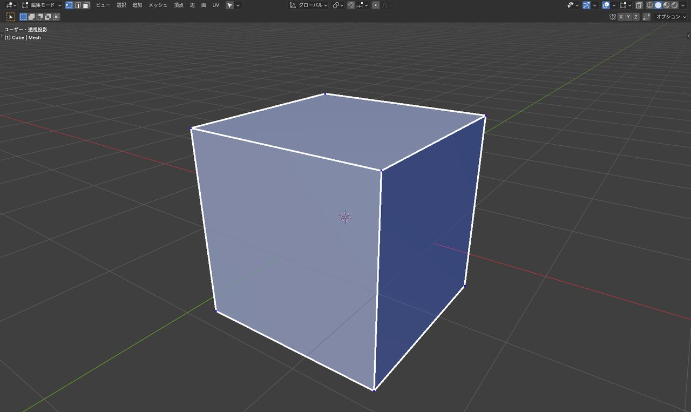
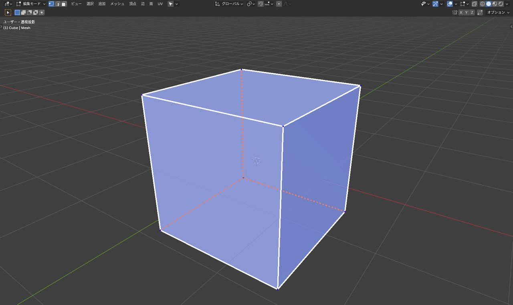
試す前に 編集モードで遮蔽表示を切り替え、同じ視点で確認する。
1. このアドオンでできること
3D ビューに、頂点・辺・面の見やすい色付け、裏側の表示、トポロジーの検査、プロポーショナル編集の範囲、寸法などを重ねて表示するアドオンです。
- 編集モードの頂点・辺・面を、見えている所・裏に隠れた所・選択中・マウスの下（ホバー）で色分けして表示する
- 裏に隠れた頂点・辺・面を「X-Ray時のみ」「常時」「なし」から選んで表示する
- オブジェクトモードやスカルプトモードで、マウスの下にあるオブジェクトの頂点・辺・面を強調する
- UV エディターで、マウスの下の UV 頂点・辺・面を強調し、同じメッシュの頂点・辺を共有する UV も色で示す
- ソリッド表示で、Blender 標準のアウトラインの代わりに、色と太さを決めた輪郭の線を描く（高精度アウトライン）
- プロポーショナル編集の影響範囲を、3D ビューと UV エディターにヒートマップ（色の濃さの図）で表示する
- シーム・シャープ・非マニフォールド・クリース・ベベルウェイトの辺や、Nゴン・小さい面・裏面を色で知らせる（トポロジーチェック）
- 3D ビューにグリッドの間隔の寸法を表示し、距離・角度・円弧・面積などの計測を置く（スマート メジャー）
- ノードエディターの Image Texture ノードと画像エディターに、画像の解像度を表示する（画像サイズビューアー）
- 3D ビューを白い背景に黒い影絵の表示へ切り替えて、形の輪郭を確かめる（シルエットモード）
- 重いシーン向けに、最適化プリセットで表示の負荷を下げる
- 表示の設定をプリセットとして保存・呼び出し、.blend ファイルのシーンごとに設定を持たせる
- モデリング中に、選んだ頂点や辺を太く・はっきりした色で見たい時
- 物の裏側にある頂点を、X-Ray にしないまま確かめたい時
- Nゴンや非マニフォールドの辺など、形の不具合をまとめて探したい時
- プロポーショナル編集でどこまで動くかを、動かす前に色で見たい時
- キャラクターや小物の寸法を、ビューポートに表示して確かめたい時
- テクスチャ画像の解像度を、ノードを開かずに確かめたい時
- ポーズや形の輪郭（シルエット）だけを見て、読みやすさを確かめたい時
ひと目で分かる例
このアドオンを使うと、画面は次のように変わります。くわしい操作は 5 章の各機能の「実例」で説明します。
実例編集中の頂点・辺・面を見やすく色付けする（スザンヌで試した様子）
「メッシュ・カーブ表示」を有効にすると、編集モードの頂点・辺・面と選択中の部分が、はっきりした色で重ねて描かれます。
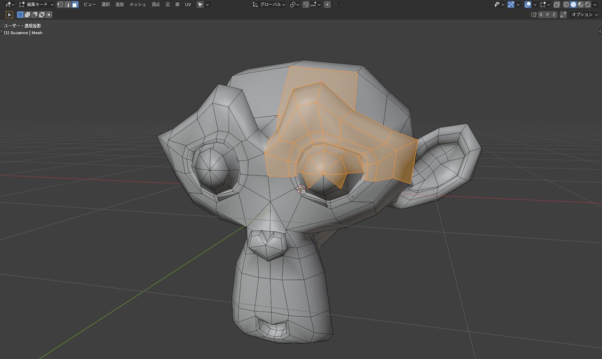
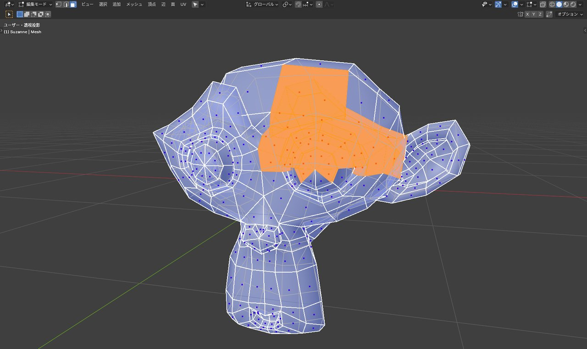
- スザンヌを編集モードにして、顔の一部の面を選びます。
- 「常時機能切り替え」の「メッシュ・カーブ表示」の右のボタンを押して「有効」にします。
見どころ：Blender の標準の黒い線の代わりに、白い太めの辺、面の青い塗り、面の中心の点が重なり、選んだ面は濃いオレンジで塗られます。どこを選んでいるかがひと目で分かります。
実例白い背景に黒い影絵で形を確かめる（シルエットモード）（スザンヌで試した様子）
「シルエットモード」を有効にすると、3D ビューが白い背景に黒一色の影絵の表示になります。
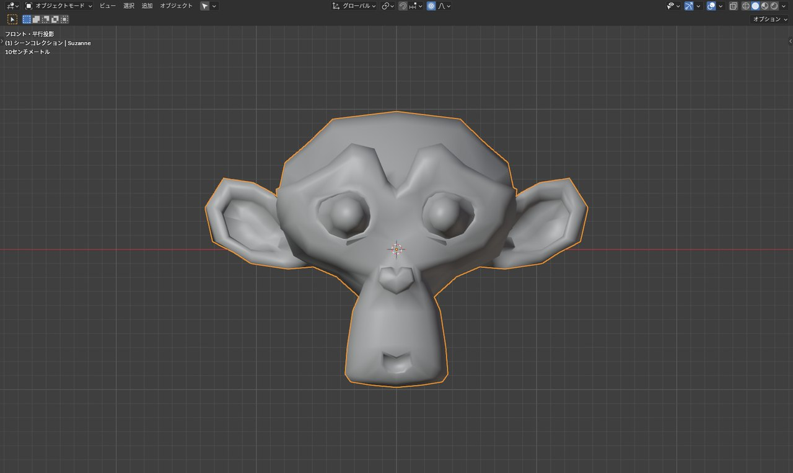
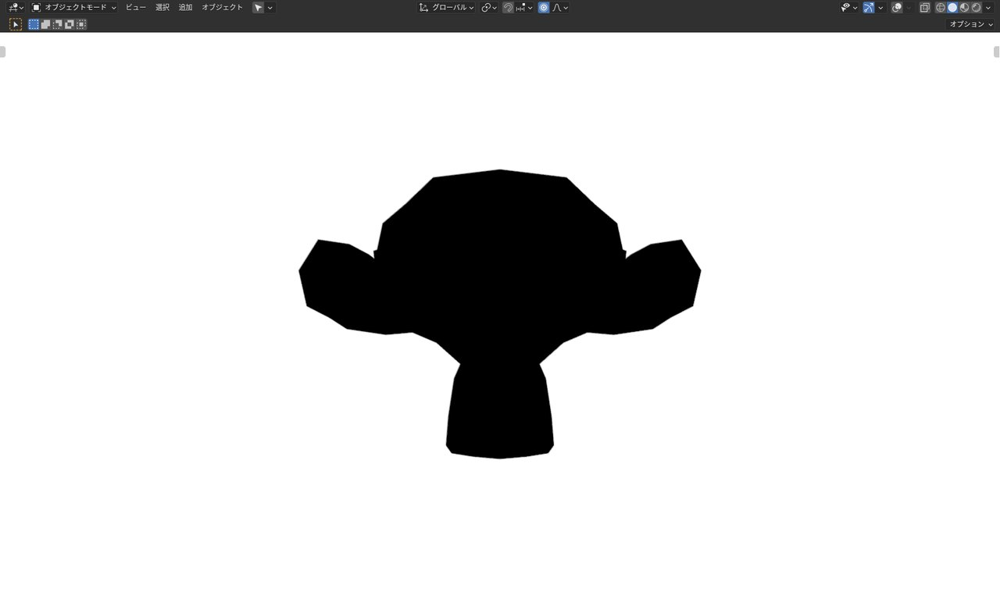
- 「常時機能切り替え」の「シルエットモード」を「有効」にします。
- もう一度押すと元の表示に戻ります。
見どころ：陰影や線が消え、白地に黒い形だけが残ります。輪郭のバランスや、ポーズの読みやすさを確かめるのに向いています。
2. 目玉の機能
このアドオンならではの機能を、図に番号を付けて説明します。図の中の番号と、図の下の一覧の番号が対応しています。図を押すと大きく表示されます。設定の一つ一つは 5 章の各見出しで説明します。
2-1. 編集中のメッシュを色で見分ける（メッシュ・カーブ表示）いちばんの売り
編集モードの頂点・辺・面に、はっきりした色を重ねて描きます。Blender の標準の黒い線の代わりに、白い太めの辺・青い面の塗り・面の中心の点が重なり、選んだ面は濃いオレンジで塗られるので、どこを選んでいるかがひと目で分かります。手前の面に隠れた裏の辺も、X-Ray にしなくても、決めた色や破線で透かして見られます。色と大きさ、どのモードで出すかは、頂点・辺・面ごとに決められます。カーブでは制御点と形の線、ラティスでは制御点とケージの辺も表示します。
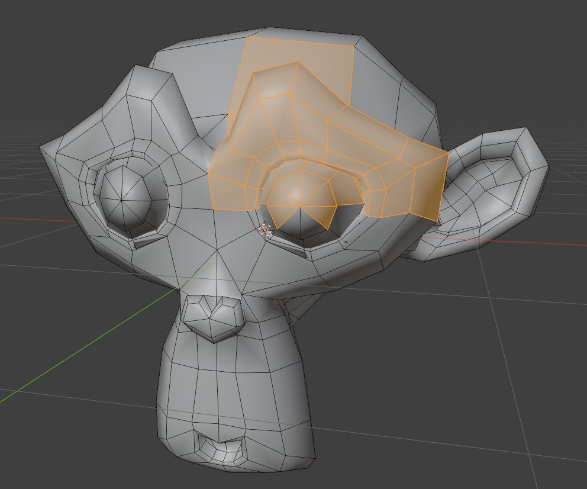
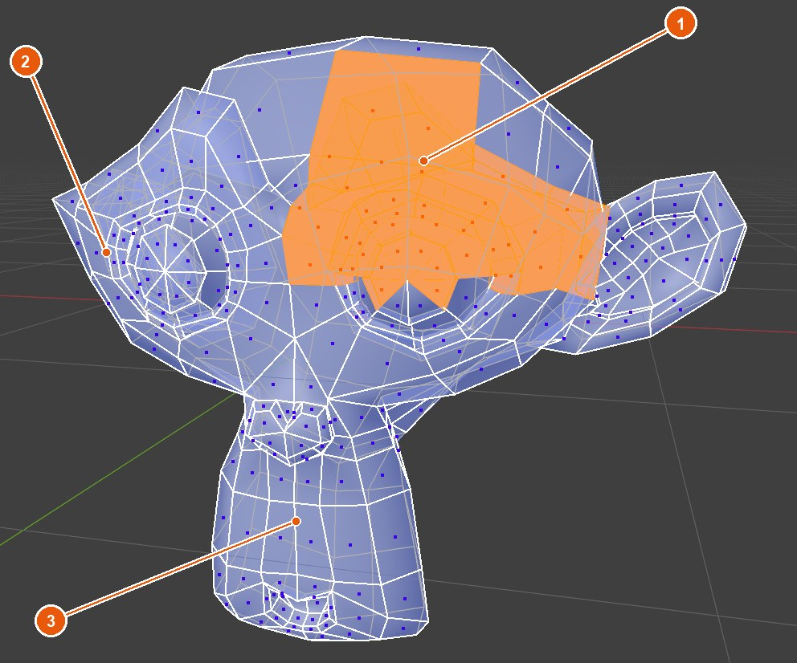
- 1選んだ面：濃いオレンジで塗られる
- 2辺：白い太めの線で描かれる
- 3面：青く塗られ、面の中心に点が出る

- 4裏の辺：手前の面に隠れた辺。X-Ray なしで、赤く透けて見える

- 5破線：裏の辺だけが切れ切れの線になる。手前の辺はふつうの線のまま
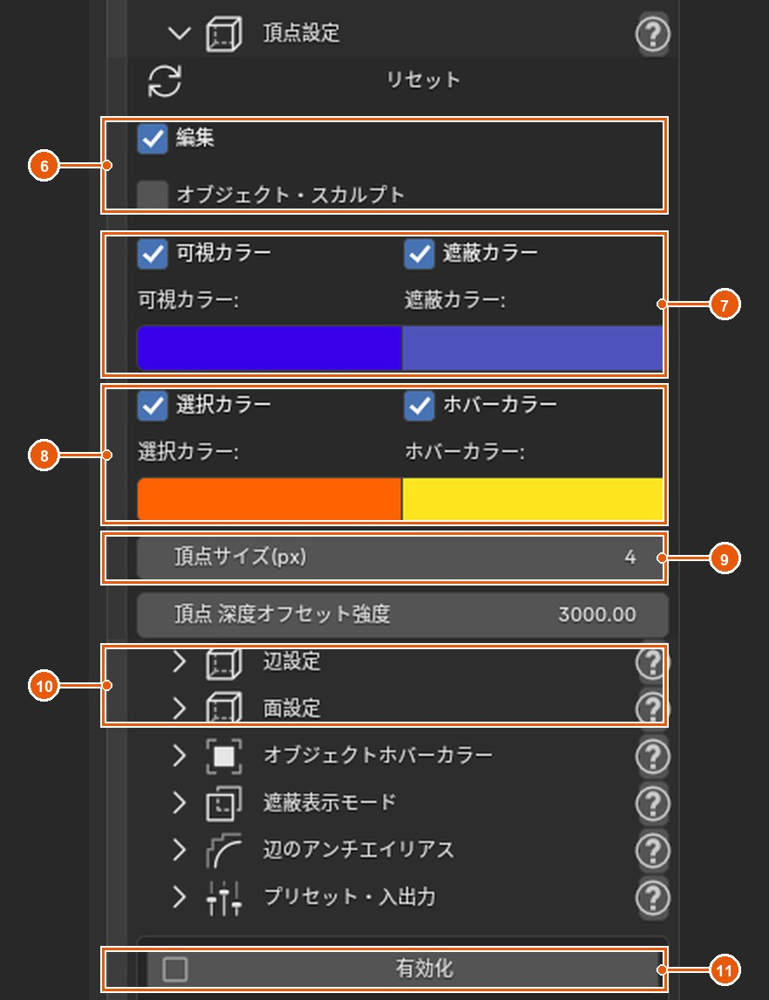
- 6編集 / オブジェクト・スカルプト：頂点の点を出すモード。編集モードと、オブジェクト・スカルプトモードを別々に入れる
- 7可視カラー / 遮蔽カラー：見えている頂点と、裏に隠れた頂点の色。チェックを入れた方を描く
- 8選択カラー / ホバーカラー：選んだ頂点と、マウスの下の頂点を強調する色
- 9頂点サイズ(px)：点の大きさを、画面のピクセル数で決める
- 10辺設定 / 面設定：辺の太さと色、面の塗りの濃さと色は、それぞれの折りたたみで決める
- 11有効化：このオーバーレイのオン・オフ。「常時機能切り替え」の「メッシュ・カーブ表示」と同じ働き
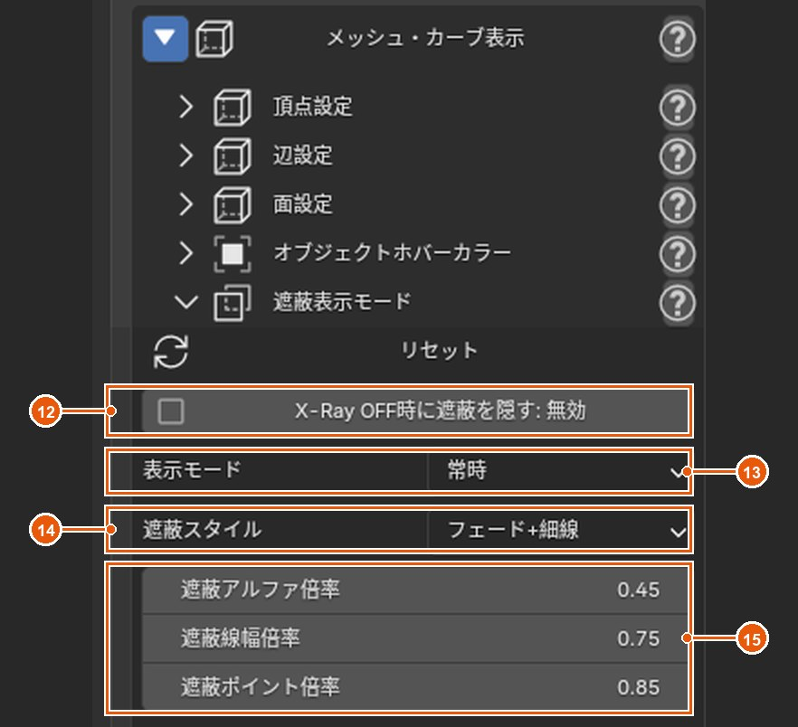
- 12X-Ray OFF時に遮蔽を隠す：「有効」の間は、裏の部分を X-Ray の時だけ描く。押すたびに「有効」と「無効」が切り替わる（図は「無効」）
- 13表示モード：裏の部分を描く時。「X-Ray時のみ」「常時」（最初の値）「なし」
- 14遮蔽スタイル：裏の部分の見た目。「通常」「フェード」「細線」「フェード+細線」（最初の値）「破線」（辺だけ）
- 15遮蔽アルファ / 線幅 / ポイント倍率：裏の部分の濃さ・辺の太さ・点の大きさを、ふつうの表示に対する倍率で決める
- メッシュを選び、編集モードにする。
- サイドバーの「スマートオーバーレイ」タブの「常時機能切り替え」で、「メッシュ・カーブ表示」を「有効」にする（⑪ の「有効化」と同じ）。
- 「頂点設定」「辺設定」「面設定」で、色と大きさを決める（⑥〜⑩）。
- 裏の部分の見せ方は、「遮蔽表示モード」の ⑬ 表示モードと ⑭ 遮蔽スタイルで選ぶ。
- 「機能の最適化」の「最適化プリセット」が「標準」「軽量」「最軽量」の間は、X-Ray がオフだと裏の部分が出ない（「X-Ray OFF時は遮蔽カラーを隠す」がオンになるため）。「最高品質」に戻すか、その項目をオフにする。
- ショートカットキーは自動では登録されない。付けたい時は「ショートカットの登録方法」の「登録ID」を「コピー」して、自分で登録する。
- オブジェクトモードでマウスの下の物を強調するのは「オブジェクトホバーカラー」。「常時機能切り替え」の「オブジェクトホバー」でオンにする。
くわしい設定：5-4. メッシュ・カーブ表示、5-5. 頂点設定、5-9. 遮蔽表示モード
2-2. プロポーショナル編集の範囲を色で見る（プロポーション表示）図で見る
プロポーショナル編集（選んだ所の周りも一緒に、なだらかに動かす機能）の影響の強さを、色で表示します。選んだ所が赤、離れるにつれて緑・青へ変わり、範囲の外には色が付きません。動かす前に、どこまでどのくらい動くかが分かるので、「半径」を決めやすくなります。メッシュ・カーブ・ラティス・オブジェクトモードの原点・UV 編集で使えます。下の 3 枚は、スザンヌの頭の上の頂点を 1 つ選んだ例です。
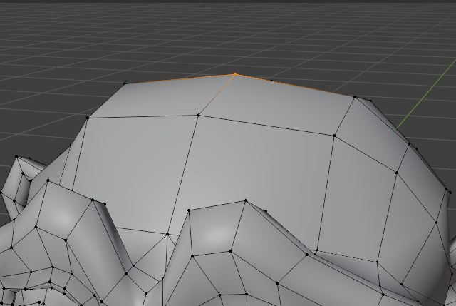
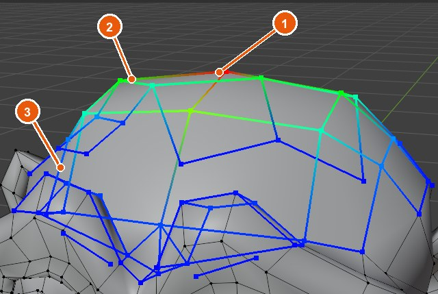
- 1選んだ頂点：赤。影響がいちばん強い
- 2近い所：緑。① より影響が弱い
- 3離れた所：青。影響が弱い。範囲の外には色が付かない

- 4② と同じ所：範囲の端になり、青に変わる
- 5③ と同じ所：範囲の外になり、色が付かない
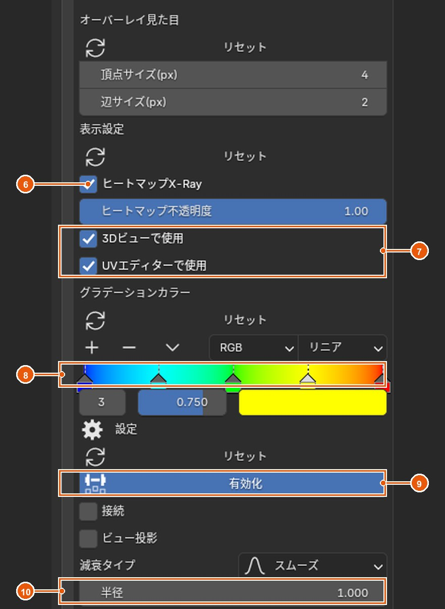
- 6ヒートマップX-Ray：面の裏に隠れた辺の色も透かして描く。最初はオン
- 73Dビューで使用 / UVエディターで使用：3D ビューと UV エディターの、どちらに出すか
- 8グラデーションカラー：影響の強さごとの色の並び。「+」「−」で色の点を足す・消す
- 9有効化：Blender のプロポーショナル編集そのもののオン・オフ。オンで青くなる
- 10半径：届く範囲。小さくすると、色の範囲も小さくなる（④⑤）
- 編集モードで、動かしたい頂点を選ぶ。
- 「プロポーション表示」→「設定」の ⑨「有効化」を押して、プロポーショナル編集をオンにする。
- 「常時機能切り替え」の「プロポーション表示」を「有効」にする。
- ⑩「半径」を変えながら、色の範囲を見て決める。
- 表示には「常時機能切り替え」の「プロポーション表示」と、プロポーショナル編集の 2 つがオンになっている必要がある。「メッシュ・カーブ表示」は「無効」のままでよい。
- UV エディターの表示は、UV エディターで選んだ UV だけを元にする。
- 「接続」「ビュー投影」「減衰タイプ」も、ここから変えられる（プロポーショナル編集がオンの時に出る）。
くわしい設定：5-15. プロポーション表示
2-3. 形の注意点を色で見つける（トポロジーチェック）図で見る
メッシュの辺と面のうち、注意したい物を色で強調します。チェックを入れるだけで、UV シームが水色、穴の縁など閉じていない辺（非マニフォールド）が赤で浮かび上がり、「Nゴン表示」を入れると、5 本以上の辺を持つ面（N ゴン）が薄いピンクで塗られます。ほかの 4 角形・3 角形の面の色は変わらないので、注意したい所だけが目立ちます。形を整える時や検査の時だけオンにします。
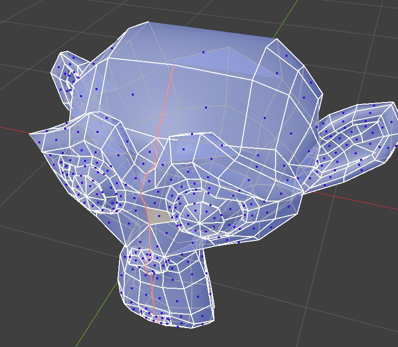
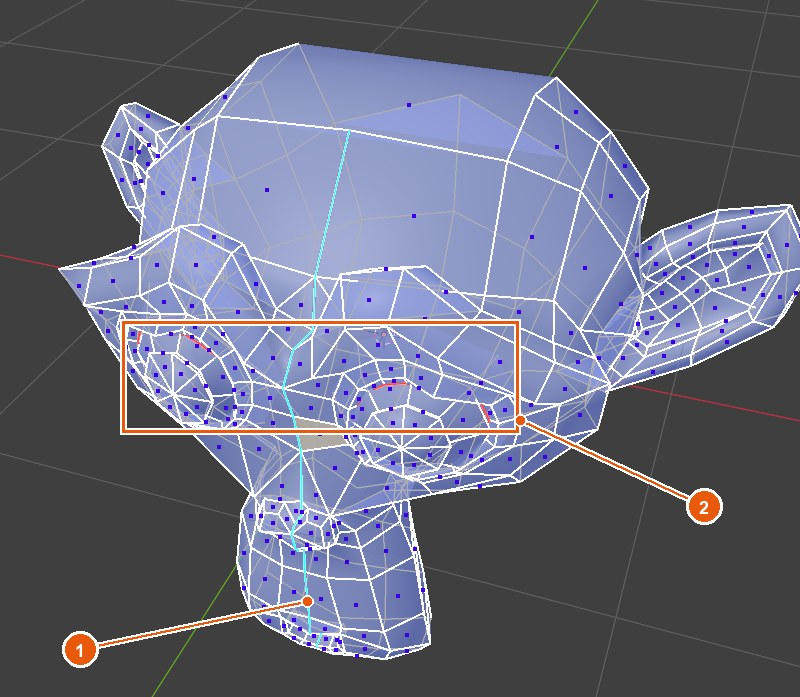
- 1シーム：水色になる（前の図の中央の赤い線）
- 2穴の縁：目の周りの、閉じていない辺が赤くなる
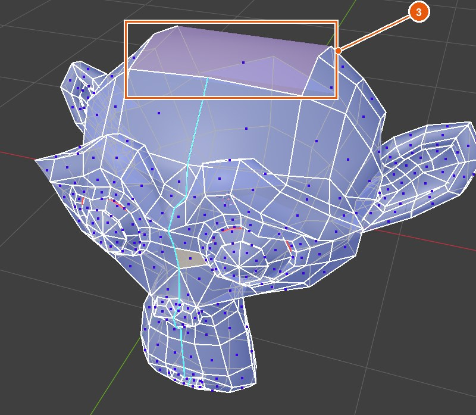
- 3N ゴン：頭の上の、5 本以上の辺を持つ面が薄いピンクで塗られる
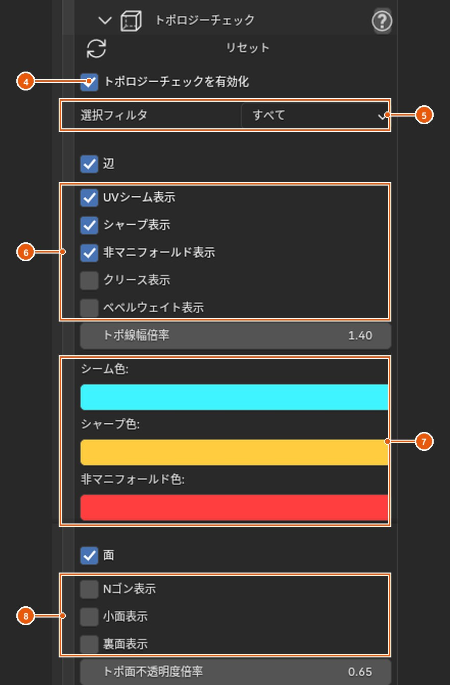
- 4トポロジーチェックを有効化：検査全体のオン・オフ。入れると下の項目が出る
- 5選択フィルタ：調べる範囲。「すべて」「非選択のみ」「選択のみ」
- 6辺の種類：UVシーム・シャープ・非マニフォールド（穴の縁など、閉じていない辺）・クリース・ベベルウェイト。入れた種類だけ色が付く
- 7種類ごとの色：図ではシームが水色、シャープが黄色、非マニフォールドが赤
- 8面の種類：Nゴン（5 本以上の辺を持つ面）・小面（とても小さい面）・裏面。入れた種類の面が塗られる
- 編集モードにし、「常時機能切り替え」の「メッシュ・カーブ表示」を「有効」にしておく。
- 「その他ツール」の「トポロジーチェック」を開き、④ にチェックを入れる。
- ⑥ の辺の種類と ⑧ の面の種類から、見たい物だけを入れる（N ゴンを探す時は「Nゴン表示」）。
- 「メッシュ・カーブ表示」が「有効」の時だけ出る。「最適化プリセット」が「最軽量」の間は色が出ない。
- 選んでいる辺は、選択の色が優先される。
- 要らない種類はオフにすると見やすい。
くわしい設定：5-17. トポロジーチェック
3. 準備
アドオンの入れ方・画面を日本語にする方法・N パネルと「？」ヘルプの共通の使い方は、「SmartTools 全体仕様書」にまとめています。先にそちらの 2〜5 章を読んでください。
| 入れる ZIP | SmartOverlaySuite_1.0.0.zip |
|---|---|
| Blender の画面での名前 | Smart Overlay |
| 動く Blender | 5.1.2 |
4. 画面の場所
3D ビューのサイドバー（N パネル）の「スマートオーバーレイ」タブにある 1 枚のパネルに、すべての機能が入っています。画像エディターやノードエディターなど、ほかのエディターのサイドバーにも同じ「スマートオーバーレイ」タブが出ます。プリファレンスのアドオン設定には項目を出しません。
| 出る画面 | 3D ビュー、画像エディター（UV エディター）、ノードエディター、ビデオシーケンサー、ムービークリップエディター、ドープシート、グラフエディター、NLA エディター、テキストエディター、ファイルブラウザー、スプレッドシート |
|---|---|
| タブ | スマートオーバーレイ |
| モード | オブジェクトモード・編集モード・スカルプトモードなど（機能ごとに使えるモードが違います） |
- インストール・日本語化・N パネルの開き方・「？」ヘルプの使い方は、全体仕様書の該当の章を見てください。
- 3D ビューでサイドバーを開き、「スマートオーバーレイ」タブを押します。
- パネルの中は、枠で囲まれた 7 つの見出し（「常時機能切り替え」「機能の最適化」「メッシュ・カーブ表示」「高精度アウトライン」「UVのオーバーレイ」「プロポーション表示」「その他ツール」）に分かれています。見出しの左の三角を押すと開閉します。
- まず「常時機能切り替え」を開き、使う機能を「有効」にします。「無効」のままの機能は画面に表示されません。
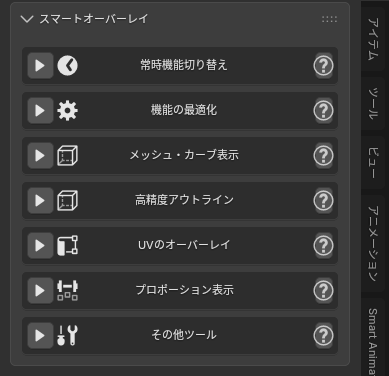
5. 機能の説明
画面の上から順に、見出しごとに説明します。見出しの右の「？」を押すと、同じ内容の説明が画面にも出ます。青い枠の「実例」は、スザンヌなどの簡単なモデルで実際に操作し、3D ビューでの変化を前と後で並べたものです。
5-1. 「スマートオーバーレイ」パネルの全体
このアドオンの入り口です。サイドバーのタブの中に「スマートオーバーレイ」という 1 枚のパネルがあり、その中に 7 つの見出しが縦に並びます。最初は「常時機能切り替え」と「機能の最適化」が閉じていて、ほかの見出しは開いています。
場所サイドバー →「スマートオーバーレイ」タブ
| 表示 | 働き |
|---|---|
| 見出しの左の三角 | その見出しを開く・閉じるを切り替えます。開閉の状態は保存されます。 |
| 「？」 | 見出しの右にあります。押すと、その見出しの説明（ヘルプ）が出ます。 |
| 「リセット」 | 多くの見出しの中の先頭にあります。その見出しの設定を既定の値に戻します。 |
| 「常時機能切り替え」 | 各機能のオン・オフをまとめた見出しです。 |
| 「機能の最適化」 | 表示の負荷を下げる設定の見出しです。 |
| 「メッシュ・カーブ表示」 | 頂点・辺・面の色付け表示の設定です。 |
| 「高精度アウトライン」 | 輪郭の線の設定です。 |
| 「UVのオーバーレイ」 | UV エディターのホバー表示の設定です。 |
| 「プロポーション表示」 | プロポーショナル編集の範囲を色で見せる設定です。 |
| 「その他ツール」 | 「トポロジーチェック」「画像サイズビューアー」「スマート メジャー」「シルエットモード」が入っています。 |
5-2. 常時機能切り替え
画面に表示し続ける機能を、ここでまとめてオン・オフします。行ごとに、左に機能の名前、右にチェック付きのボタンがあります。ボタンには今の状態（「有効」か「無効」）が出て、押すたびに切り替わります。使わない機能は「無効」にしておくと、そのぶん軽くなります。最初は「Nパネル状態保存」だけが「有効」で、ほかの機能はすべて「無効」です。
場所サイドバー →「スマートオーバーレイ」→「常時機能切り替え」（時計のアイコン）
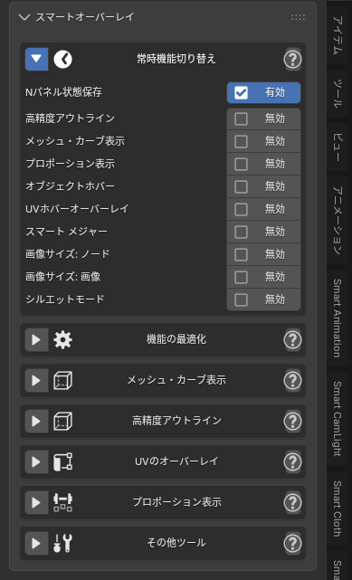
| 表示 | 働き |
|---|---|
| 「Nパネル状態保存」 | 「有効」にすると、このパネルで変えた設定を、Blender の設定フォルダーのファイルにすぐ保存します。次に Blender を起動した時も同じ設定で始まります。「無効」にすると、その時の状態を一度だけ保存し、それ以降に変えた設定は保存しません（Blender を起動し直すと、無効にした時の状態に戻ります）。 |
| 「高精度アウトライン」 | 輪郭の線の表示をオン・オフします。 |
| 「メッシュ・カーブ表示」 | 頂点・辺・面の色付け表示をオン・オフします。 |
| 「プロポーション表示」 | プロポーショナル編集の範囲のヒートマップ表示をオン・オフします。 |
| 「オブジェクトホバー」 | オブジェクトモードとスカルプトモードで、マウスの下のオブジェクトを強調する表示をオン・オフします。 |
| 「UVホバーオーバーレイ」 | UV エディターでマウスの下の UV を強調する表示をオン・オフします。 |
| 「スマート メジャー」 | グリッドの寸法表示と、置いた計測の表示をオン・オフします。 |
| 「画像サイズ: ノード」 | Image Texture ノードの上に、画像の解像度を表示します。 |
| 「画像サイズ: 画像」 | 画像エディターに、表示中の画像の解像度を表示します。 |
| 「シルエットモード」 | 3D ビューを影絵の表示に切り替えます。もう一度押すと元に戻します。 |
5-3. 機能の最適化
「メッシュ・カーブ表示」の描く範囲と更新の仕方を調整して、重いシーンでも動きを軽くします。まずプリセットを選び、必要なら下の項目を 1 つずつ変えます。項目を手で変えると、プリセットは自動で「カスタム」になります。
場所サイドバー →「スマートオーバーレイ」→「機能の最適化」
| 表示 | 働き |
|---|---|
| 「リセット」 | この見出しの設定を既定の値に戻します。 |
| 「最適化プリセット」 | 「最高品質」「標準」「軽量」「最軽量」「カスタム」から選びます。「最高品質」は見た目を優先し、最初の状態もこれです。「標準」「軽量」は負荷を段階的に下げます。代わりに、描くのはアクティブなオブジェクトだけになり、メッシュのホバーの強調は出ず、X-Ray がオフの間は裏に隠れた部分の色が出ません。「最軽量」はさらに、裏に隠れた部分の色とトポロジーチェックの色、カーブ、ラティス、モディファイア後の形を省いて、ビューの反応を最優先にします。 |
| 「表示対象・品質」 | 何を描くかの項目のまとまりです。 |
| 「Blender標準の辺・頂点を隠す」 | Blender 標準の黒い辺と頂点を目立たなくして、このアドオンの色が見やすくなります。 |
| 「アクティブビューのみ描画」 | 最後に操作した 3D ビューだけに描きます。 |
| 「アクティブオブジェクトのみ」 | アクティブなメッシュ・カーブだけに描きます。 |
| 「モディファイア後の形状を含める」 | モディファイアや Geometry Nodes の結果にも描きます。オフにすると省いて軽くします。 |
| 「カーブ形状を含める」 | カーブの制御点と形の線を描きます。 |
| 「ラティスを含める」 | ラティスの制御点とケージの辺を描きます。 |
| 「裏面も描画」 | 面の塗りを裏表の両方に描きます。オフにすると表だけになり軽くなります。 |
| 「編集モード: 変更後の面を使用」 | 編集モードの面の塗りを、モディファイアをかけた後の形に描きます。オフにすると編集ケージに描きます。 |
| 「停止中はめり込み頂点・辺を表示」 | サブディビジョンなどで面の中に埋まった頂点・辺を、視点を止めている間だけ少し濃く描きます。 |
| 「辺・面モード: 面中心を使用」 | 辺・面の選択モードの時、面の中心に点を描きます。オフにすると本物の頂点を描きます。 |
| 「高密度メッシュ/カーブLOD: 面のみ」 | 要素の数が上限を超えた物は、頂点・辺を省いて面の塗りだけにします。 |
| 「LOD要素数の上限」 | 上の項目が働き始める要素の数（頂点＋辺＋面の合計）です。 |
| 「遮蔽・Blender選択表示整理」 | 裏に隠れた部分の扱いと、選択の色の整理の項目のまとまりです。 |
| 「X-Ray OFF時は遮蔽カラーを隠す」 | X-Ray がオフの間は、裏に隠れた部分の色を消します。「表示モード」が「常時」でも消えます。「標準」「軽量」「最軽量」を選ぶとオンに、「最高品質」を選ぶとオフになります。 |
| 「遮蔽OFF時は裏側を隠す」 | 裏側の表示をオフにしている時、裏の部分が手前に透けて見えないようにします。 |
| 「他オブジェクトも遮蔽に使用」 | ほかの物の後ろに隠れた部分も、隠れた物として扱います。 |
| 「遮蔽パスを無効化」 | 裏に隠れた部分の色の描画を省いて軽くします。 |
| 「透過時はアウトライン遮蔽部を隠す」 | 透過表示の時も、高精度アウトラインの裏側の線を隠します。 |
| 「隣接辺グラデーションを隠す」 | 選択の周りの辺のグラデーションを消します。 |
| 「頂点モード: 関連辺・面を隠す」 | 頂点選択の時、関連する辺・面の選択の色を消します。 |
| 「辺モード: 関連頂点・面を隠す」 | 辺選択の時、関連する頂点・面の選択の色を消します。 |
| 「面モード: 関連頂点・辺を隠す」 | 面選択の時、関連する頂点・辺の選択の色を消します。 |
| 「トポロジー診断を無効化」 | シーム・シャープ・非マニフォールドなどの検査の表示を省いて軽くします。オンの間は「トポロジーチェック」の色が出ません。「最軽量」を選ぶとオンになります。 |
| 「ライブ更新・キャッシュ」 | 表示を作り直す頻度と、キャッシュ（一度作った表示の使い回し）の項目のまとまりです。ふだんはプリセットに任せて構いません。 |
| 「アクティブビューのみ更新」 | 描き直しを操作中の 3D ビューに絞ります。ほかのビューの表示は消えません。 |
| 「変更検知キャッシュを使用」 | メッシュが変わっていない間は、作った表示を使い回します。 |
| 「ライブキャッシュ破棄を減らす」 | 編集の後に何度も作り直すのを減らします。 |
| 「変更後の面キャッシュを分離」 | モディファイアの後の面の塗りを、頂点・辺とは別に取っておきます。 |
| 「変更後の面をタイマーで再構築」 | モディファイアの後の面を、描くたびではなく時間を置いて作り直します。 |
| 「再構築中は前回の変更後面を維持」 | 作り直している間は、前の面を出したままにします。 |
| 「変更後の面の再構築頻度を制限」 | 作り直す回数を減らします。 |
| 「変更後の面の再構築間隔」 | 上の項目がオンの時の、作り直しの最小の間隔です。大きいほど軽くなり、編集への追従は遅れます。 |
| 「モディファイアキャッシュ破棄を限定」 | 関係するモディファイアの分だけを作り直します。 |
| 「編集バッチでインデックス方式を使用」 | GPU へ送るデータの量を減らします。 |
| 「トポロジーキャッシュを分離」 | シーム・シャープなどの検査の表示を別に取っておきます。 |
| 「描画負荷・ホバー」 | 描く処理とホバーの計算を減らす項目のまとまりです。 |
| 「無効・透明パスをスキップ」 | オフの表示や完全に透明な表示の処理を省きます。 |
| 「必要な時だけホバー更新」 | マウス・編集・選択・視点が変わった時だけ、ホバーを計算し直します。 |
| 「ビュー操作中は重い更新を後回し」 | 視点を動かしている間は、重い作り直しをしません。 |
| 「ビュー操作中はバッチを再利用」 | 視点を動かしている間は、作ってある表示をそのまま使います。 |
| 「メッシュホバーを無効化」 | メッシュ・カーブのホバーの計算を省いて、反応を速くします。 |
| 「オブジェクトモードで遮蔽物を選択」 | 選んだ物の後ろにある物もホバーで強調し、クリックで選べるようにします。 |
5-4. メッシュ・カーブ表示
3D ビューのメッシュに、頂点・辺・面・選択・裏側（遮蔽）・ホバーの色付けを重ねて表示します。カーブでは制御点と形の線、ラティスでは制御点とケージの辺を表示します。中は 7 つの折りたたみに分かれ、その下に「有効化」のボタンとショートカットの案内があります。
場所サイドバー →「スマートオーバーレイ」→「メッシュ・カーブ表示」
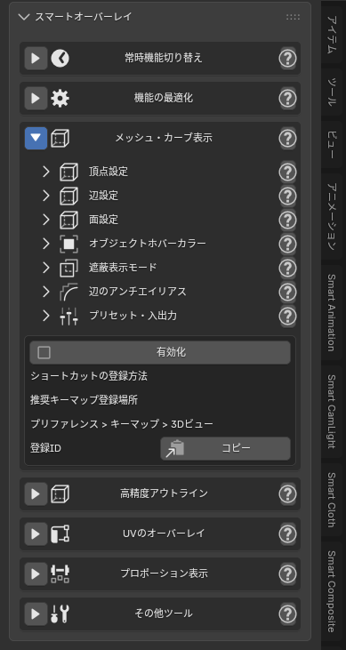
| 表示 | 働き |
|---|---|
| 「頂点設定」「辺設定」「面設定」 | それぞれの描き方と色を決める折りたたみです。 |
| 「オブジェクトホバーカラー」 | マウスの下のオブジェクトを強調する色の折りたたみです。 |
| 「遮蔽表示モード」 | 裏に隠れた部分の見せ方の折りたたみです。 |
| 「辺のアンチエイリアス」 | 辺の線のなめらかさの折りたたみです。 |
| 「プリセット・入出力」 | 表示のプリセットと、シーンごとの設定の折りたたみです。 |
| 「有効化」 | このオーバーレイのオン・オフを切り替えるボタンです。「常時機能切り替え」の「メッシュ・カーブ表示」と同じ働きです。 |
| 「ショートカットの登録方法」 | ショートカットキーを付けたい時の案内です。「推奨キーマップ登録場所」（「プリファレンス > キーマップ > 3Dビュー」）と、「登録ID」の「コピー」ボタンが出ます。 |
実例編集中の頂点・辺・面を見やすく色付けする（スザンヌで試した様子）
「メッシュ・カーブ表示」を有効にすると、編集モードの頂点・辺・面と選択中の部分が、はっきりした色で重ねて描かれます。
- スザンヌを編集モードにして、顔の一部の面を選びます。
- 「常時機能切り替え」の「メッシュ・カーブ表示」の右のボタンを押して「有効」にします。
見どころ：Blender の標準の黒い線の代わりに、白い太めの辺、面の青い塗り、面の中心の点が重なり、選んだ面は濃いオレンジで塗られます。どこを選んでいるかがひと目で分かります。
5-5. 頂点設定
頂点の点の描き方を決めます。どのモードで出すか、どの状態の頂点を出すか、色と大きさを選びます。
場所「メッシュ・カーブ表示」→「頂点設定」
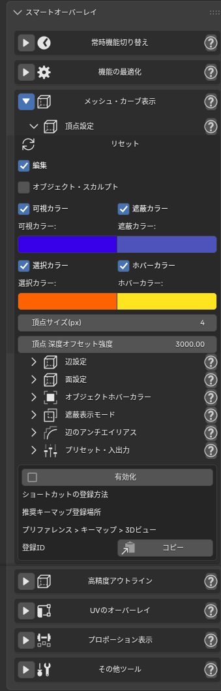
| 表示 | 働き |
|---|---|
| 「リセット」 | 頂点の設定を既定の値に戻します。 |
| 「編集」 | 編集モードで頂点を表示します。 |
| 「オブジェクト・スカルプト」 | オブジェクトモードとスカルプトモードで頂点を表示します。 |
| 「可視カラー」 | チェックで、今の視点から見えている頂点を描きます。色の欄でその色を決めます。 |
| 「遮蔽カラー」 | チェックで、物の裏に隠れた頂点を描きます（「遮蔽表示モード」の設定に従います）。色の欄でその色を決めます。 |
| 「選択カラー」 | チェックで、選択中の頂点をこの色で強調します。 |
| 「ホバーカラー」 | チェックで、編集モードでマウスの下にある頂点をこの色で強調します。 |
| 「頂点サイズ(px)」 | 点の大きさを、画面のピクセル数で決めます。 |
| 「頂点 深度オフセット強度」 | 点がメッシュの面に埋もれてちらつくのを防ぐ、手前へのずらし量です。点がちらつく時だけ上げます。 |
実例選んだ頂点を大きく見せる（頂点設定）（スザンヌで試した様子）
「頂点サイズ(px)」を上げると、頂点の点が大きくなり、選んだ頂点がどれかすぐ分かります。
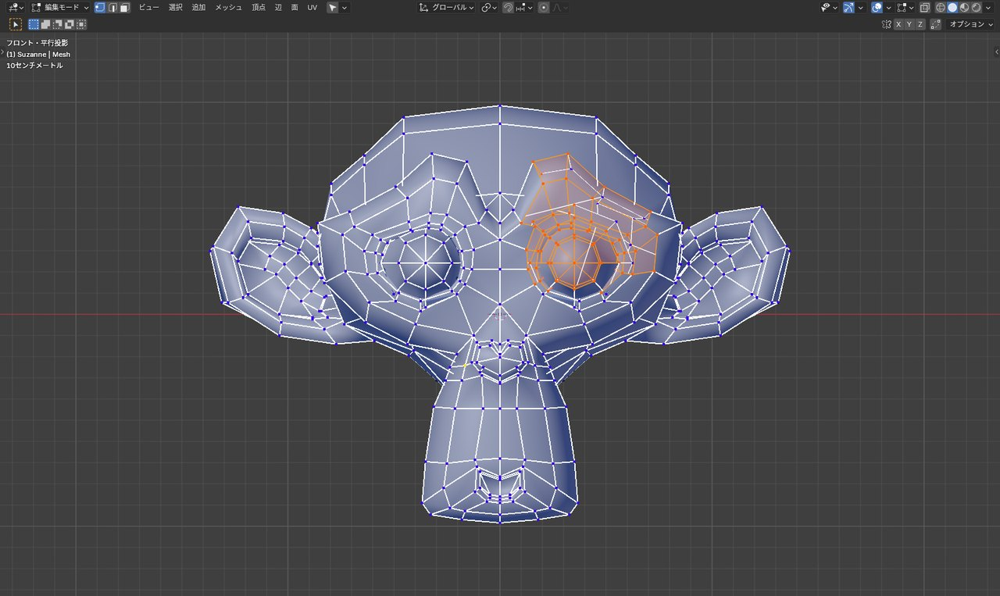
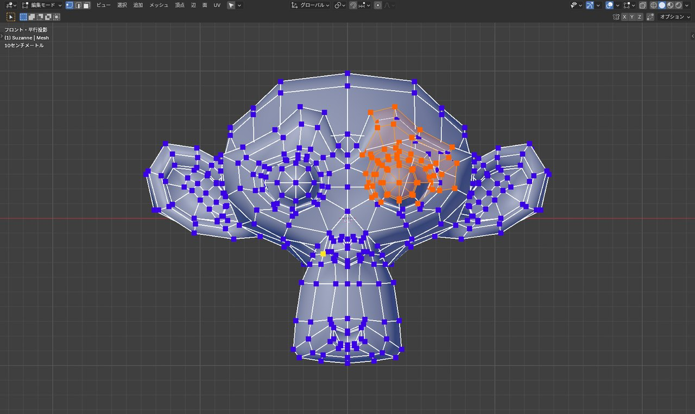
- スザンヌを編集モードにして、頂点をいくつか選びます。
- 「常時機能切り替え」の「メッシュ・カーブ表示」を「有効」にします。
- 「メッシュ・カーブ表示」→「頂点設定」の「頂点サイズ(px)」を 4 から 12 にします。
見どころ：すべての点が大きくなり、選んだ頂点のオレンジの点がはっきり見えます。
5-6. 辺設定
辺の線の描き方を決めます。項目の並びは「頂点設定」と同じです。
場所「メッシュ・カーブ表示」→「辺設定」
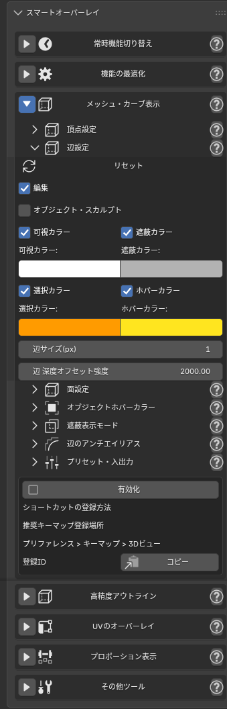
| 表示 | 働き |
|---|---|
| 「リセット」 | 辺の設定を既定の値に戻します。 |
| 「編集」「オブジェクト・スカルプト」 | 辺を表示するモードを選びます。 |
| 「可視カラー」「遮蔽カラー」 | 見えている辺・裏に隠れた辺を描くかどうかと、その色です。 |
| 「選択カラー」「ホバーカラー」 | 選択中の辺・マウスの下の辺を強調するかどうかと、その色です。 |
| 「辺サイズ(px)」 | 線の太さを、画面のピクセル数で決めます。 |
| 「辺 深度オフセット強度」 | 線が面に埋もれてちらつくのを防ぐ、手前へのずらし量です。 |
5-7. 面設定
面を塗りつぶす表示を決めます。頂点や辺だけ見たい時は、面の表示をオフにします。
場所「メッシュ・カーブ表示」→「面設定」
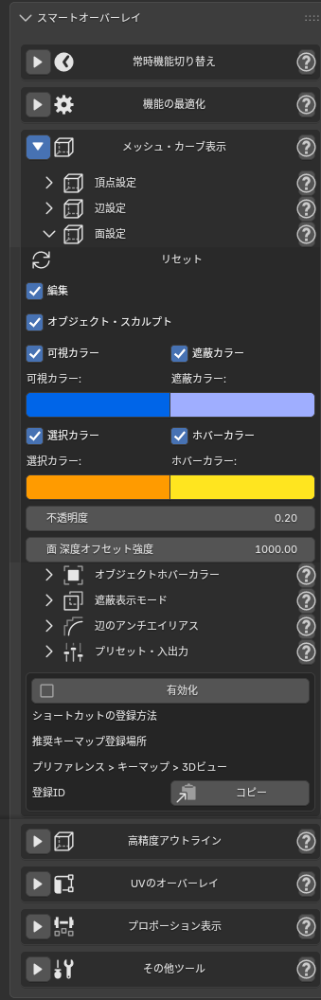
| 表示 | 働き |
|---|---|
| 「リセット」 | 面の設定を既定の値に戻します。 |
| 「編集」「オブジェクト・スカルプト」 | 面の塗りを表示するモードを選びます。 |
| 「可視カラー」「遮蔽カラー」 | 見えている面・裏に隠れた面を塗るかどうかと、その色です。 |
| 「選択カラー」 | チェックで、選択中の面をこの色で強調します。濃さは「不透明度」に従います。 |
| 「ホバーカラー」 | チェックで、編集モードでマウスの下にある面をこの色で強調します。 |
| 「不透明度」 | 面の塗りの濃さです。0 で透明、1 で不透明になります。 |
| 「面 深度オフセット強度」 | 塗りがメッシュとちらつくのを防ぐ、手前へのずらし量です。 |
実例面の塗りを消して辺だけで見る（面設定）（スザンヌで試した様子）
「面設定」の「編集」を外すと、面の青い塗りが消え、頂点と辺だけになります。

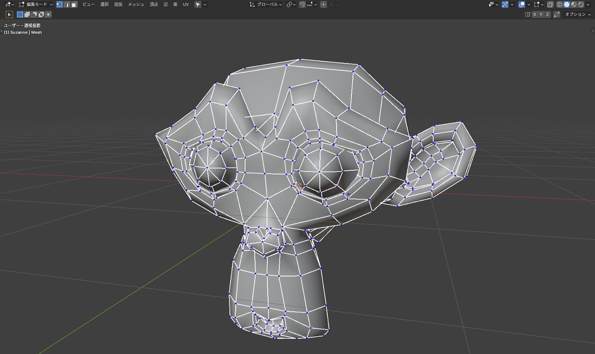
- スザンヌを編集モードにし、「常時機能切り替え」の「メッシュ・カーブ表示」を「有効」にします。
- 「メッシュ・カーブ表示」→「遮蔽表示モード」の「表示モード」を「なし」にします。
- 「メッシュ・カーブ表示」→「面設定」の「編集」を外します。
見どころ：面の塗りが消えて形の陰影が見やすくなります。塗りを消しても、裏の辺は透けません。
5-8. オブジェクトホバーカラー
オブジェクトモードとスカルプトモードで、マウスの下にあるオブジェクトの頂点・辺・面を強調する色を決めます。後半には、ホバーの探し方と、編集モードのホバーの色もまとめてあります。
場所「メッシュ・カーブ表示」→「オブジェクトホバーカラー」
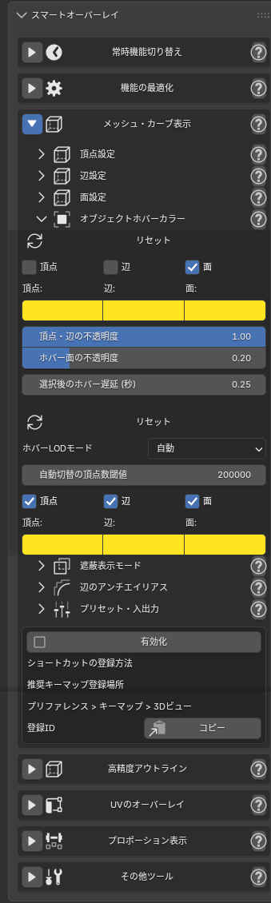
| 表示 | 働き |
|---|---|
| 「リセット」（2 か所） | 上の「リセット」は前半の色と濃さを、下の「リセット」は「ホバーLODモード」以降を、既定の値に戻します。 |
| 「頂点」「辺」「面」（前半） | チェックで強調するかどうか、色の欄で色を決めます。オブジェクトモード・スカルプトモード用です。 |
| 「頂点・辺の不透明度」 | 強調する頂点・辺の濃さです。 |
| 「ホバー面の不透明度」 | 強調する面の濃さです。 |
| 「選択後のホバー遅延 (秒)」 | 選択を変えた後、ホバーの強調が働き始めるまでの待ち時間です。強調がちらつく時に増やします。 |
| 「ホバーLODモード」 | マウスの下の要素を探す方法を「全走査」「自動」「面ローカルのみ」から選びます。「全走査」は正確ですが重く、「面ローカルのみ」はいつも速い方法を使います。ふだんは「自動」で構いません。 |
| 「自動切替の頂点数閾値」 | 「自動」の時だけ出ます。この頂点数を超えると、探し方を速い方法に切り替えます。 |
| 「頂点」「辺」「面」（後半） | 編集モードでマウスの下にある要素を強調するかどうかと、その色です。「頂点設定」などの「ホバーカラー」と同じ設定です。 |
5-9. 遮蔽表示モード
手前の面に隠れた頂点・辺・面（遮蔽された部分）を、いつ・どんな見た目で描くかを決めます。最初は、いつも描く（「常時」）、薄く細く描く（「フェード+細線」）になっています。
場所「メッシュ・カーブ表示」→「遮蔽表示モード」
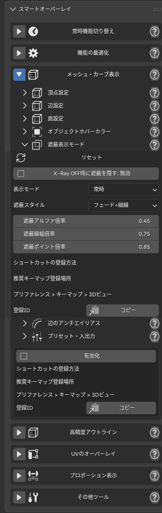
| 表示 | 働き |
|---|---|
| 「リセット」 | この折りたたみの設定を既定の値に戻します。 |
| 「X-Ray OFF時に遮蔽を隠す: 有効／無効」 | 押すたびに、隠れた部分を X-Ray の時だけ表示する（「有効」）か、いつも表示する（「無効」）かを切り替えます。今の状態がボタンの文字の後ろに出ます。 |
| 「表示モード」 | 隠れた部分を描く時を、「X-Ray時のみ」「常時」「なし」の 3 つから選びます。 |
| 「遮蔽スタイル」 | 隠れた部分の見た目を選びます。「通常」はふつうと同じ、「フェード」は薄く、「細線」は細く、「フェード+細線」は薄く細くします。「破線」は、ふつうの濃さと太さのまま、切れ切れの線で描きます（辺だけに効きます）。 |
| 「遮蔽アルファ倍率」 | 隠れた部分の濃さを、ふつうの表示に対する倍率で決めます。 |
| 「遮蔽線幅倍率」 | 隠れた辺の太さの倍率です。 |
| 「遮蔽ポイント倍率」 | 隠れた頂点の点の大きさの倍率です。 |
| 「ショートカットの登録方法」 | 上の切り替えボタンにショートカットを付けるための「推奨キーマップ登録場所」（「プリファレンス > キーマップ > 3Dビュー」）と、「登録ID」の「コピー」ボタンが出ます。 |
実例裏に隠れた辺を X-Ray なしで見る（遮蔽表示モード）（立方体で試した様子）
「表示モード」と「遮蔽スタイル」で、手前の面に隠れた頂点・辺の見せ方を変えます。
- 立方体を編集モードにし、「常時機能切り替え」の「メッシュ・カーブ表示」を「有効」にします。ここでは見やすいように、「辺設定」の「辺サイズ(px)」を 3 にしています。
- 「機能の最適化」の「最適化プリセット」は「最高品質」のままにします（「標準」「軽量」「最軽量」では、X-Ray がオフの間は裏の辺が出ません）。
- 「メッシュ・カーブ表示」→「遮蔽表示モード」の「表示モード」を「なし」にすると、裏の辺は出ません。
- 「表示モード」を「常時」、「遮蔽スタイル」を「通常」にし、「辺設定」の「遮蔽カラー」を赤くします。
- 「遮蔽スタイル」を「破線」にします。
見どころ：「なし」では手前の辺だけが見えますが、「常時」にすると、X-Ray にしなくても、立方体の裏にある 3 本の辺が決めた色で透けて見えます。「破線」にすると、裏の辺だけが切れ切れの線になり、手前の辺と見分けやすくなります。
5-10. 辺のアンチエイリアス
辺の線のギザギザを、どれだけなめらかにするかを選びます。メッシュ・カーブ表示と、プロポーション表示の辺に効きます。
場所「メッシュ・カーブ表示」→「辺のアンチエイリアス」
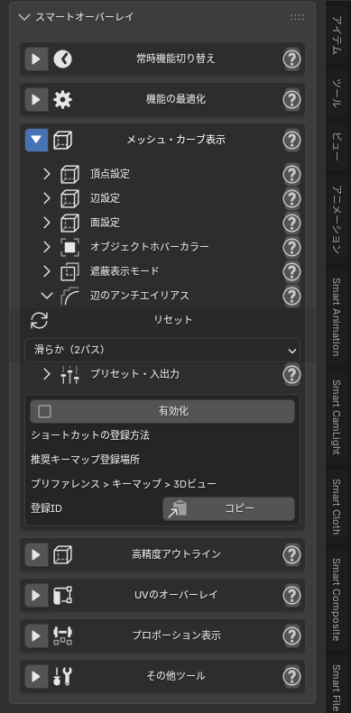
| 表示 | 働き |
|---|---|
| 「リセット」 | この設定を既定の値に戻します。 |
| 方式の欄 | 「滑らか（2パス）」「内蔵AA」「AAなし」から選びます。速さを優先するなら「AAなし」、釣り合いなら「内蔵AA」、見た目を優先するなら「滑らか（2パス）」です。 |
5-11. プリセット・入出力
表示の設定一式に名前を付けて保存し、呼び出せます。また、今の .blend ファイルのシーンに設定を保存して、ファイルごとに違う設定を使えます。
場所「メッシュ・カーブ表示」→「プリセット・入出力」
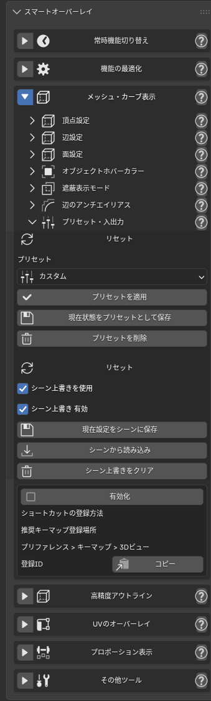
| 表示 | 働き |
|---|---|
| 「リセット」（2 か所） | 上はプリセットの選択を、下はシーンの設定の切り替えを既定に戻します。 |
| 「プリセット」 | 下の欄を押すと一覧が出ます（最初は「カスタム」）。最初から「カスタム」「トポロジーチェック」「スカルプト」「X-Ray」「Maya」「3ds Max」が入っていて、自分で保存した物も並びます。選んだだけでは反映されません。 |
| 「プリセットを適用」 | 選んだプリセットを、今の設定に反映します。 |
| 「現在状態をプリセットとして保存」 | 押すと名前を聞かれ、今の設定を自分のプリセットとして保存します。 |
| 「プリセットを削除」 | 選んでいる自分のプリセットを削除します。最初から入っているプリセットは削除できません。 |
| 「シーン上書きを使用」 | オンにすると、このファイルのシーンに設定を持たせる項目が使えます。 |
| 「シーン上書き 有効」 | このファイルのシーンに保存した設定を使うかどうかです。 |
| 「現在設定をシーンに保存」「シーンから読み込み」「シーン上書きをクリア」 | 今の設定をシーンへ書き込む・シーンから読み戻す・シーンに保存した設定を消す、の 3 つです。 |
実例プリセットで表示を一度に切り替える（プリセット・入出力）（スザンヌで試した様子）
プリセットを選んで「プリセットを適用」を押すと、色や表示する要素が一度に切り替わります。
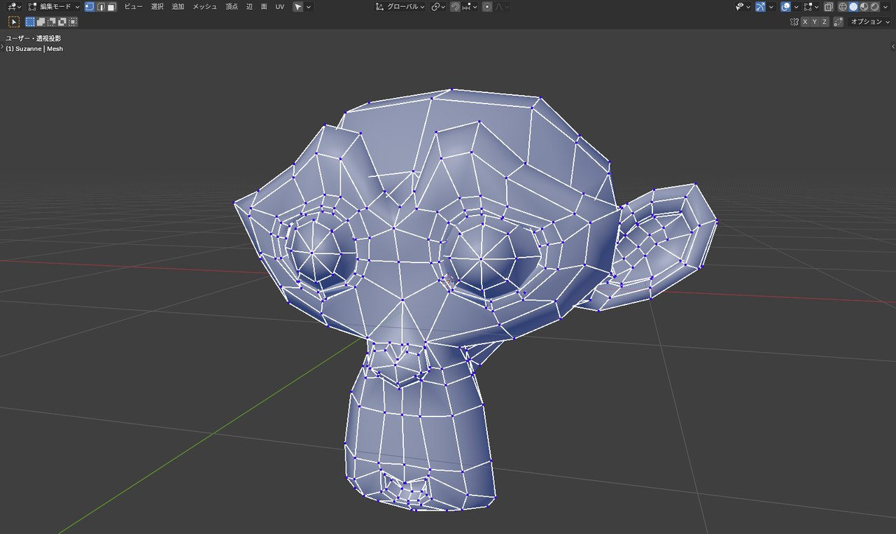
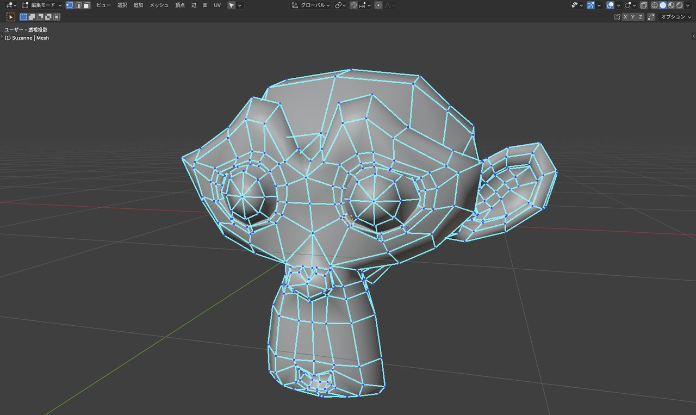
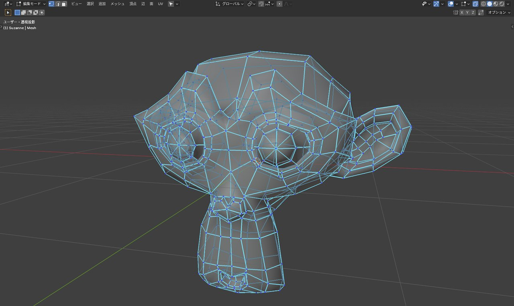
- スザンヌを編集モードにし、「常時機能切り替え」の「メッシュ・カーブ表示」を「有効」にします。
- 「メッシュ・カーブ表示」→「プリセット・入出力」の「プリセット」の欄で「トポロジーチェック」を選びます。
- 「プリセットを適用」を押します。
見どころ：面の青い塗りが消え、手前の辺が太い水色になります。裏の辺は X-Ray の時だけ暗い色で出るので、ふだんは手前の形だけが見え、X-Ray にすると全体のつながりも見られます。
5-12. 高精度アウトライン
ソリッド表示の 3D ビューで、Blender 標準のアウトラインの代わりに、物の輪郭と、物どうしが交差する線を描きます。オンの間は、その 3D ビューの標準のアウトラインを止め、オフにすると元に戻します。輪郭はフレーム移動と再生に追従します。作り直すと遅くなる重い物では、タイムラインや物が動いている間は標準のアウトラインを出し、止まると輪郭に戻します。
場所サイドバー →「スマートオーバーレイ」→「高精度アウトライン」
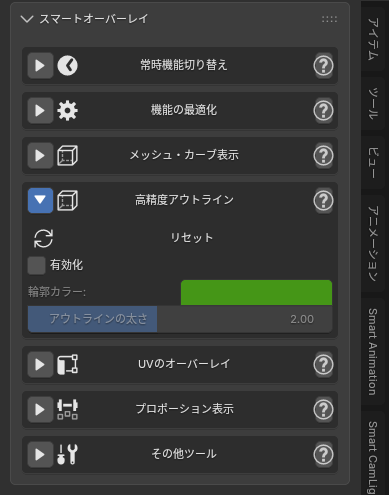
| 表示 | 働き |
|---|---|
| 「リセット」 | この見出しの設定を既定の値に戻します。 |
| 「有効化」 | チェックで、輪郭の線をオン・オフします。オフの時は下の 2 つが薄く表示され、触れません。 |
| 「輪郭カラー:」 | 輪郭の色です。Blender 標準のアウトラインの色とは別に決められます。 |
| 「アウトラインの太さ」 | 輪郭の線の太さの倍率です。1.00 で Blender のテーマのアウトラインの太さと同じになります。 |
実例物の輪郭をくっきりした線で描く（高精度アウトライン）（スザンヌで試した様子）
「高精度アウトライン」を有効にすると、選んだ物の輪郭と、面が重なる所の線を、決めた色と太さで描きます。
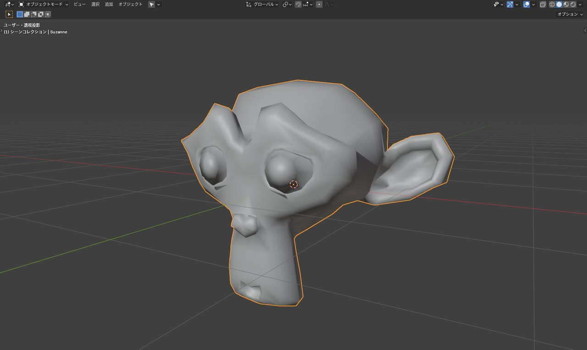
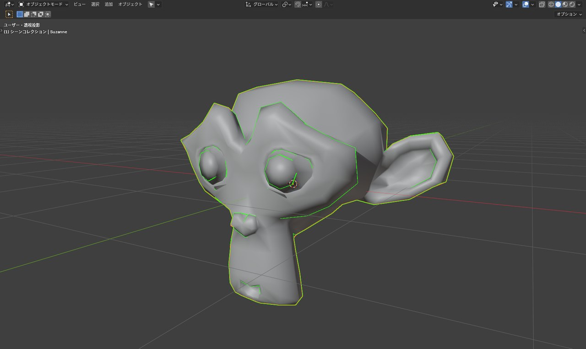
- オブジェクトモードでスザンヌを選びます。
- 「常時機能切り替え」の「高精度アウトライン」を「有効」にします。
- 線の太さを変えたい時は、「高精度アウトライン」の「アウトラインの太さ」を変えます（ここでは既定の 2.00）。
見どころ：輪郭が緑の線で描かれ、目や眉、耳と頭の重なりなど、内側の境目にも線が入ります。選択を示すオレンジの縁は、緑の線の脇に細く残ります。
実例フレームを動かしても輪郭が付いてくる（高精度アウトライン）（スザンヌで試した様子）
「高精度アウトライン」の輪郭は、物が動くアニメーションでも、今のフレームの形に付いてきます。
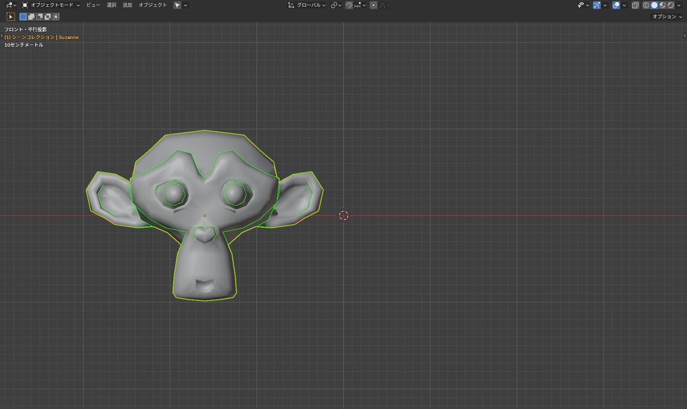
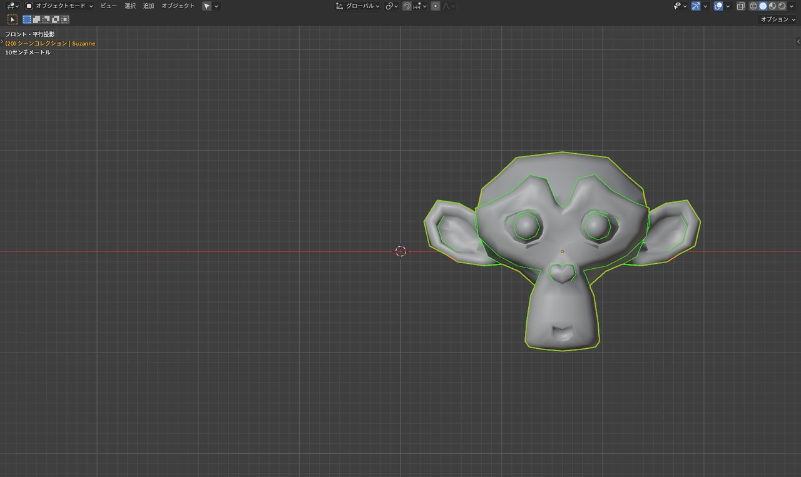
- スザンヌの位置にキーを打ち、1 フレーム目と 20 フレーム目で場所を変えておきます。
- 「常時機能切り替え」の「高精度アウトライン」を「有効」にします。
- タイムラインでフレームを 1 から 20 へ動かします。
見どころ：緑の輪郭は、前の位置に残らず、20 フレーム目のスザンヌの形にぴったり付いています。
5-13. UVのオーバーレイ
UV エディターで、UV の頂点・辺・面にマウスを重ねた時の強調表示を使います。オン・オフのボタンと、色の設定（「UVホバーカラー」）があります。
場所サイドバー →「スマートオーバーレイ」→「UVのオーバーレイ」（3D ビューと画像エディターのどちらのサイドバーでも同じです）
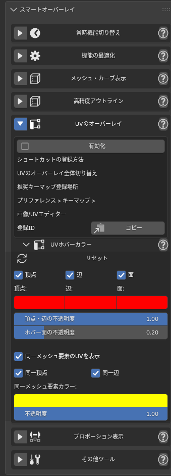
| 表示 | 働き |
|---|---|
| 「有効化」 | UV のホバー表示をオン・オフします。 |
| 「ショートカットの登録方法」 | 「UVのオーバーレイ全体切り替え」用の案内です。登録場所「プリファレンス > キーマップ > 画像/UVエディター」と、「登録ID」の「コピー」ボタンが出ます。 |
| 「UVホバーカラー」 | 色の設定の折りたたみです（次の見出しで説明します）。 |
5-14. UVホバーカラー
UV エディターで強調する UV の頂点・辺・面の色と濃さを決めます。同じメッシュの頂点・辺を共有している別の UV を知らせる表示もあります。
場所「UVのオーバーレイ」→「UVホバーカラー」
| 表示 | 働き |
|---|---|
| 「リセット」 | UV ホバーの色と濃さの設定を既定の値に戻します。 |
| 「頂点」「辺」「面」 | チェックで強調するかどうか、色の欄で色を決めます。UV の選択モードが頂点・辺・面の時に、それぞれ働きます。 |
| 「頂点・辺の不透明度」「ホバー面の不透明度」 | 強調の濃さです。メッシュ・カーブ表示の面の不透明度とは別に決められます。 |
| 「同一メッシュ要素のUVを表示」 | UV を選んでいる時、それと同じ 3D の頂点・辺を使っている、選ばれていない UV を強調します。UV の切れ目で分かれた所が分かります。 |
| 「同一頂点」「同一辺」 | 上の表示を、頂点と辺のどちらに使うかを選びます。 |
| 「同一メッシュ要素カラー」と「不透明度」 | 上の表示の色と濃さです。 |
5-15. プロポーション表示
プロポーショナル編集（選んだ所の周りも一緒に、なだらかに動かす機能）の影響の強さを、色の濃さの図（ヒートマップ）で表示します。メッシュ・カーブ・ラティス・オブジェクトモードの原点・UV 編集で使えます。Blender のプロポーショナル編集の設定も、ここから変えられます。
場所サイドバー →「スマートオーバーレイ」→「プロポーション表示」
| 表示 | 働き |
|---|---|
| 「リセット」 | 「オーバーレイ見た目」「表示設定」「グラデーションカラー」「設定」の箱ごとにあり、その箱の設定を既定の値に戻します。 |
| 「オーバーレイ見た目」 | 「頂点サイズ(px)」「辺サイズ(px)」で、影響を受ける点と線の大きさを決めます。 |
| 「表示設定」 | 「ヒートマップX-Ray」（面の裏に隠れた部分も透かして描く）、「ヒートマップ不透明度」、「3Dビューで使用」、「UVエディターで使用」です。 |
| 「グラデーションカラー」 | 影響の強さごとの色の並びを決めます。Blender のカラーランプと同じ形の欄で、「+」「−」で色の点を足す・消す、点を動かす、色を選ぶ、で決めます。 |
| 「設定」→「有効化」 | Blender のプロポーショナル編集そのものをオン・オフします。オンの時はボタンが青くなります。 |
| 「接続」「ビュー投影」「減衰タイプ」「半径」 | プロポーショナル編集がオンの時に出ます。つながった部分だけに効かせる、画面から見た距離で効かせる、減り方の形、届く範囲、を決めます。 |
| 「ショートカットの登録方法」 | 「プロポーション表示全体切り替え」「3Dビューで使用」「UVエディターで使用」の 3 つの切り替えに付けるための案内で、それぞれに「登録ID」の「コピー」ボタンがあります。 |
実例プロポーショナル編集の届く範囲を色で見る（プロポーション表示）（スザンヌで試した様子）
動かす前に、どこまでどのくらい動くかが、色の違いで分かります。
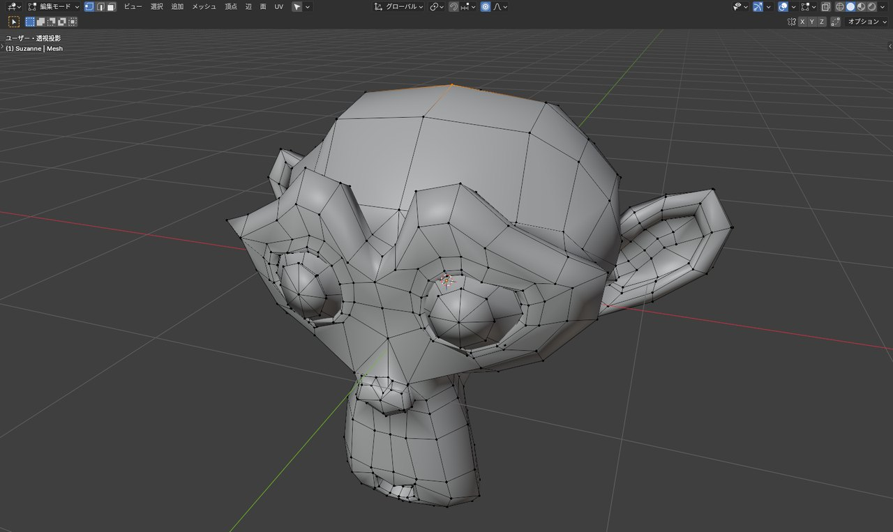
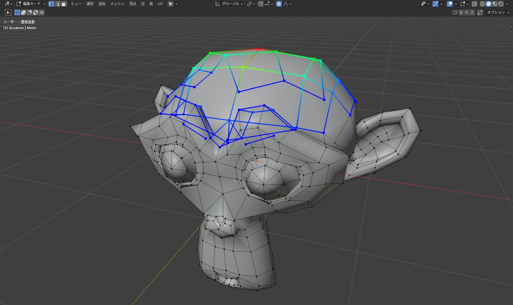
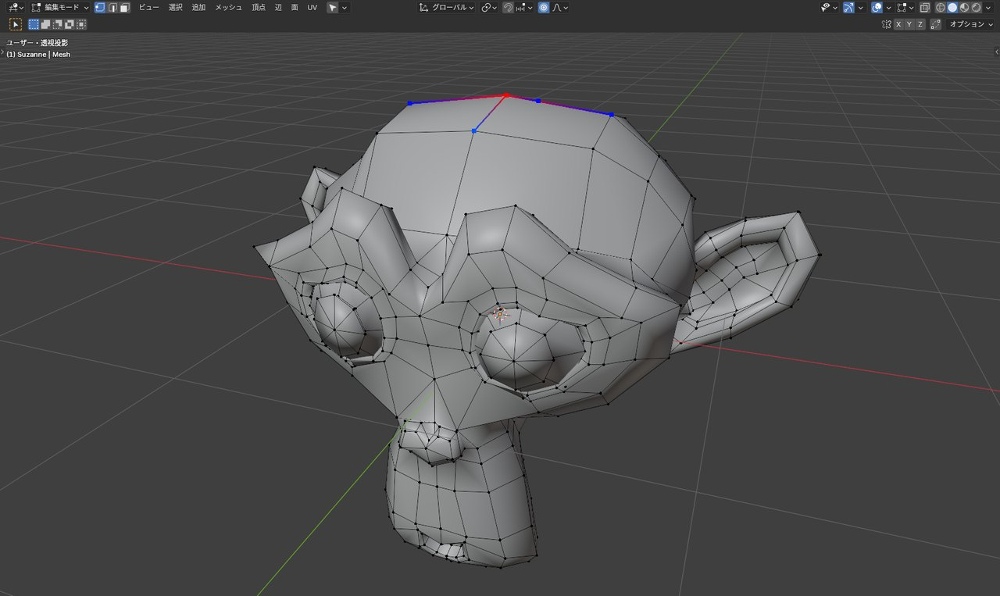
- スザンヌを編集モードにして、頭の上の頂点を 1 つ選びます。
- 「プロポーション表示」→「設定」の「有効化」を押して、プロポーショナル編集をオンにします。
- 「常時機能切り替え」の「プロポーション表示」を「有効」にします。「メッシュ・カーブ表示」は「無効」のままでかまいません。
- ここでは色の線が見やすいように、「オーバーレイ見た目」の「頂点サイズ(px)」を 7、「辺サイズ(px)」を 3 にしています。
- 「半径」を変えると、色の付く範囲が変わります。
見どころ：選んだ頂点の周りの辺と頂点だけに色が付きます。選んだ所が赤、離れるにつれて緑・青へ変わり、範囲の外には付きません。最初は「ヒートマップX-Ray」がオンなので、裏側の辺の色も透けて見えます。「半径」を小さくすると、色の範囲も小さくなります。
実例オブジェクトを動かす範囲を色で見る（オブジェクトモード）（立方体 2 つとエンプティ 3 つで試した様子）
オブジェクトモードでも、プロポーショナル編集の影響を受ける物の原点に色が付きます。
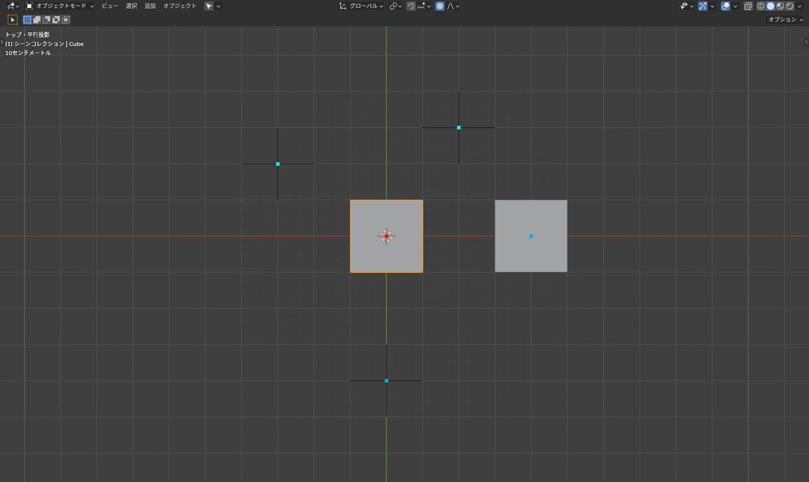
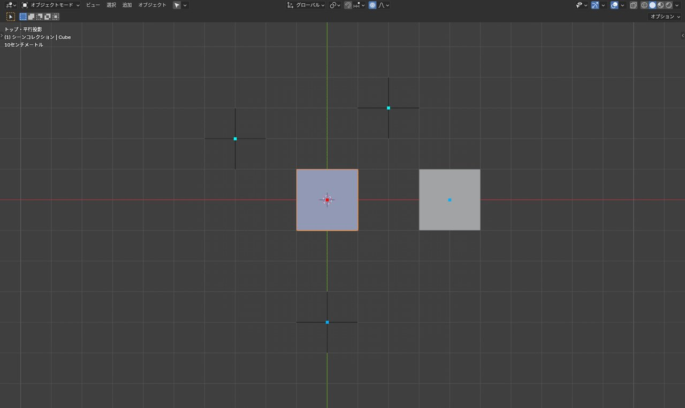
- オブジェクトモードで、動かす物を 1 つ選びます。
- 「常時機能切り替え」の「プロポーション表示」を「有効」にします。
- 「プロポーション表示」→「設定」の「有効化」を押し、「半径」を決めます。
- 「メッシュ・カーブ表示」を「有効」にしても、色はそのまま出ます。
見どころ：半径の中にある物の原点が、選んだ物に近いほど強い色で出ます。メッシュの原点だけでなく、エンプティにも色が付きます。「メッシュ・カーブ表示」は「無効」のままでも「有効」でもかまいません。
5-16. その他ツール
オーバーレイとは別の 4 つの道具が、折りたたみとして入っています。
場所サイドバー →「スマートオーバーレイ」→「その他ツール」
| 表示 | 働き |
|---|---|
| 「トポロジーチェック」 | 形の不具合を色で知らせます。 |
| 「画像サイズビューアー」 | 画像の解像度を表示します。 |
| 「スマート メジャー」 | 寸法を測って表示します。 |
| 「シルエットモード」 | 形を影絵で確かめます。 |
5-17. トポロジーチェック
メッシュの辺と面のうち、注意したい物を色で強調します。形を整える時や検査の時だけオンにし、要らない種類はオフにすると見やすくなります。
場所「その他ツール」→「トポロジーチェック」
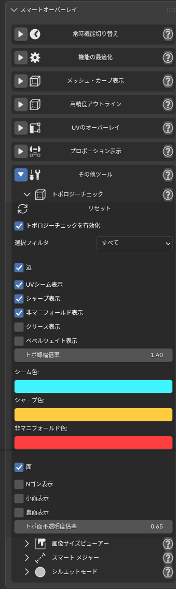
| 表示 | 働き |
|---|---|
| 「リセット」 | この見出しの設定を既定の値に戻します。 |
| 「トポロジーチェックを有効化」 | この検査全体のオン・オフです。オンにすると下の項目が出ます。 |
| 「選択フィルタ」 | 検査する範囲を「すべて」「非選択のみ」「選択のみ」から選びます。 |
| 「辺」 | 辺の検査のオン・オフです。中に「UVシーム表示」「シャープ表示」「非マニフォールド表示」（穴の縁など、閉じていない辺）「クリース表示」「ベベルウェイト表示」があります。 |
| 「クリース閾値」「ベベル閾値」 | それぞれの表示がオンの時に出ます。強調する辺の値の基準です。 |
| 「トポ線幅倍率」と色（「シーム色」「シャープ色」「非マニフォールド色」など） | 強調する線の太さの倍率と、種類ごとの色です。 |
| 「面」 | 面の検査のオン・オフです。中に「Nゴン表示」（5 本以上の辺を持つ面）「小面表示」（とても小さい面）「裏面表示」（裏返った法線を探す時に使います）があります。 |
| 「小面面積閾値」 | 「小面表示」がオンの時に出ます。小さい面とみなす面積の基準です。 |
| 「トポ面不透明度倍率」と面の色 | 強調する面の濃さの倍率と、種類ごとの色です。 |
実例形の注意点を色で見つける（トポロジーチェック）（スザンヌで試した様子）
「トポロジーチェックを有効化」で、N ゴン（5 本以上の辺を持つ面）や UV シーム・穴の縁などを色で強調し、形の注意点を見つけます。
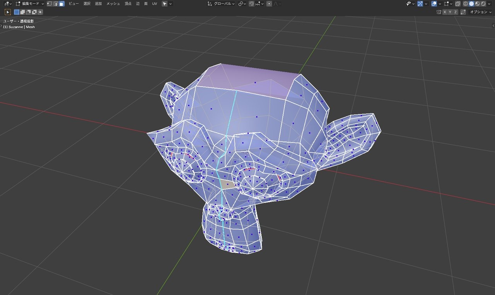
- スザンヌを編集モードにし、「常時機能切り替え」の「メッシュ・カーブ表示」を「有効」にしておきます。
- 「その他ツール」の「トポロジーチェック」を開き、「トポロジーチェックを有効化」にチェックを入れます。
- 「面」がオンのまま、その中の「Nゴン表示」にチェックを入れます。
見どころ：チェックを入れるだけで、中央のシームが水色、目の周りの穴の縁が赤で浮かび上がります。「Nゴン表示」を入れると、頭の上にまとめた大きな面（N ゴン）が薄いピンク色で塗られます。ほかの 4 角形・3 角形の面の色は変わりません。
5-18. 画像サイズビューアー
画像の解像度（縦横のピクセル数）を、ノードエディターの Image Texture ノードの上と、画像エディターの中に表示します。
場所「その他ツール」→「画像サイズビューアー」
| 表示 | 働き |
|---|---|
| 「ノードエディター」 | ノードエディター側の折りたたみです。「ノードエディター表示を有効化」で表示をオンにします。 |
| 「画像エディター」 | 画像エディター側の折りたたみです。「画像エディター表示を有効化」で表示をオンにします。 |
| 「外観」 | 「フォントサイズ」「余白」「角丸」で、表示の札の見た目を決めます。 |
| 「位置」 | ノードエディターでは「Xオフセット」「Yオフセット」、画像エディターでは「オフセット」「表示位置」で、札の位置を決めます。 |
| 「カラー」 | 「背景色」「文字色」で札の色を決めます。 |
5-19. スマート メジャー
寸法を測って 3D ビューに表示する道具です。中は「グリッドスケール表示」「スマート メジャー ツール」「項目」「設定」「レンダー」の箱に分かれています。
場所「その他ツール」→「スマート メジャー」
| 表示 | 働き |
|---|---|
| 「グリッドスケール表示」 | グリッドの間隔の寸法を表示する設定です。 |
| 「スマート メジャー ツール」 | 計測を作るボタンが並びます。 |
| 「項目」 | 作った計測の一覧と表示の設定です。見出しはいつも出ますが、中身は計測を持つオブジェクトを選んでいる時だけ出ます。 |
| 「設定」 | これから作る計測の既定の見た目です。 |
| 「レンダー」 | 計測入りの画像を作ります。 |
5-20. グリッドスケール表示
3D ビューに、グリッドの間隔の寸法のラベルを、視点に合わせて表示し続けます。
場所「その他ツール」→「スマート メジャー」→「グリッドスケール表示」
| 表示 | 働き |
|---|---|
| 「フォントサイズ」と色の欄 | ラベルの文字の大きさと色です。 |
| 「軸カラー」 | 自分で決めた色（0）と、軸ごとの色（1）を混ぜる割合です。 |
| 「アルファ」 | ラベルの濃さです。下げると、ラベルが目立たなくなります。 |
| 「単位」 | オンにすると、シーンの単位の設定に合わせます。オフの時は「単位系」が出ます。 |
| 「軸:」の X・Y・Z と、その右の 2 つのボタン | ラベルを出す軸と、透視表示・平行投影表示のどちらで出すかを選びます。 |
| 「表示単位」 | 「自動」か、mm・cm・m などの決まった単位を選びます。 |
| 「端へスナップ」「常にスナップ」 | 平行投影の時、ラベルを画面の端に寄せます。「端へスナップ」は画面の外に出たラベルだけ、「常にスナップ」はいつも寄せます。どちらかがオンの時は「端スナップ余白 (px):」で上下左右の余白を決めます。 |
| 「テキスト影」 | 文字に影を付けて読みやすくします。 |
| 「手動原点」「カーソルを使用」「原点」 | 寸法の基準の位置を、ワールドの原点ではなく好きな位置にします。「手動原点」をオンにすると「原点」の欄が出ます。「カーソルを使用」で 3D カーソルの位置を写します。 |
| 「最大注釈数」 | 一度に出すラベルの数の上限です。重い時に減らします。 |
| 右下の左右の三角 | ラベルが切り替わる時の動き方を 1〜3 で選びます（1 はフェード、2 はスライドとフェード、3 は拡大縮小とフェード）。 |
実例グリッドに寸法の目盛りを出す（グリッドスケール表示）（スザンヌで試した様子）
「スマート メジャー」を有効にすると、視点に合わせて、グリッドの軸に沿った寸法の目盛りが出ます。


- 視点を正面（平行投影）にします。
- 「常時機能切り替え」の「スマート メジャー」を「有効」にします。
見どころ：赤い X 軸の線に沿って、0.20m ごとの数字が並びます。物のおおよその大きさが、メジャーを置かずに読めます。
5-21. スマート メジャー ツール
距離・角度・円弧・面積などの計測を、選んだ頂点やオブジェクトから作って 3D ビューに置きます。計測を作るボタンは「計測を追加」の箱にまとまっています（「すべて」はその上にあります）。ボタンごとに使えるモードが決まっていて、今のモードで使えないボタンは薄く表示されます。
場所「その他ツール」→「スマート メジャー」→「スマート メジャー ツール」
| 表示 | 働き |
|---|---|
| 「すべて」 | オンにすると、選んでいないオブジェクトの計測も表示します。オフだと、選んでいるオブジェクトの計測だけを表示します。 |
| 「セグメント」 | 編集モードで頂点を 2 つ以上選んで押すと、その間の距離の計測を置きます。 |
| 「合計:」 | 右の欄でグループ（A〜Z）を選んでから計測を作ると、その計測がそのグループに入ります。「項目」に、グループごとの距離の合計が出ます。グループに入れない時は「-」のままにします。 |
| 「X」「Y」「Z」 | 編集モードで頂点を 1 つ選んで押すと、その軸の方向だけの、オブジェクトの原点までの距離を置きます。 |
| 「角度」 | 編集モードで頂点を 3 つ選んで押します。2 番目に選んだ頂点の角度を測ります。 |
| 「円弧」 | 編集モードで円弧上の頂点を 3 つ選んで押します。1 番目と 3 番目が円弧の両端です。 |
| 「ラベル」 | 編集モードで頂点を 1 つ選んで押すと、文字のラベルを置きます。 |
| 「注釈」 | オブジェクトモードで押すと、メモの文字を置きます。 |
| 「リンク」 | オブジェクトモードでオブジェクトを 2 つ選んで押すと、その間の計測を置きます。 |
| 「原点」 | オブジェクトモードでオブジェクトを選んで押すと、原点までの計測を置きます。 |
| 「面積」 | 編集モードで面を 1 つ以上選んで押すと、面積の計測を置きます。 |
| 「選択辺の合計」 | 編集モードで選んでいる辺の長さの合計を、シーンの単位で、画面下のメッセージに出します。 |
| 「メッシュデバッグ」 | 開くと、オブジェクト・頂点・辺・面・法線などの番号や位置の確認用の表示を出せます。調べる時だけ使います。 |
実例耳の先から先までの長さを画面に出す（スマート メジャー）（スザンヌで試した様子）
「セグメント」で、選んだ 2 つの頂点の間の距離を測り、線と数字を 3D ビューに置きます。
- 「常時機能切り替え」の「スマート メジャー」を「有効」にします。
- スザンヌの編集モードで、左右の耳の先の頂点を 1 つずつ選びます。
- ここでは数字が読みやすいように、「その他ツール」→「スマート メジャー」→「設定」の「ヒント間隔」を 1.75、「フォントサイズ」を 24 にしています。
- 「スマート メジャー ツール」の「セグメント」を押します。
見どころ：左右の耳の先の上に青い線と、その長さ（ここでは 2.73 m）が画面に出ます。線は「ヒント間隔」のぶんだけ離れた所に引かれます。「スマート メジャー」を有効にしていると、赤い X 軸の線に沿った寸法の目盛りも出ます。
実例角度と面積を画面に置く（スマート メジャー ツール）（立方体で試した様子）
「角度」は選んだ 3 つの頂点の角度を、「面積」は選んだ面の面積を測って、3D ビューに数字を置きます。
- 「常時機能切り替え」の「スマート メジャー」を「有効」にします。ここでは見やすいように、「グリッドスケール表示」の「軸:」の X・Y・Z をオフにし、「設定」の「フォントサイズ」を 24 にしています。
- 編集モードで頂点を 3 つ順に選び、「スマート メジャー ツール」の「角度」を押します。
- 面を選び、「面積」を押します。
見どころ：上の面の角に、90 度を示す数字が出ます。その後、選んだ面に色が付き、面積の数字（ここでは 4.00 m²）が出ます。
5-22. 項目
置いた計測の一覧です。計測の表示の仕方を、まとめて、または 1 つずつ変えます。「項目」の見出しはいつも出ますが、中身は計測を持つオブジェクトが選ばれている時だけ出ます。
場所「その他ツール」→「スマート メジャー」→「項目」
| 表示 | 働き |
|---|---|
| 「精度」 | 数値の小数点以下の桁数です。 |
| 「単位」 | 数値に使う単位を選びます。 |
| 「距離」「テキスト」 | 距離の数値と、文字の表示をそれぞれオン・オフします。 |
| 「計測単位を非表示」 | 数値の後ろの単位を出さないようにします。 |
| 「スケール」 | オンにすると、縮尺（1:x）の表示の設定が出ます。文字欄を空のままなら、日本語設定では「スケール:」、英語設定では「Scale:」と出ます。 |
| 「上書き」 | オンにすると、すべての計測の色・「幅」・「フォント」をまとめて上書きします。 |
| 「全て展開」「全て折りたたむ」 | 一覧の各計測の詳しい設定を、まとめて開く・閉じるします。 |
| 計測の行（目・歯車・色・文字・ごみ箱） | 目のアイコンでその計測の表示をオン・オフし、色と文字を変え、ごみ箱で消します。歯車を押すと「フォント」「ヒント間隔」、矢印、「距離」「合計」「線」「自動配置」などの詳しい設定が開きます。 |
| 「全て削除」 | このオブジェクトの計測をまとめて消します。 |
| 「合計」の欄 | 計測の詳しい設定の「合計」でグループに入れた計測がある時、一覧の下にグループごとの合計と全体の合計が出ます。 |
5-23. 設定
これから作る計測の、既定の見た目を決めます。たくさん作る前にここで決めると、見た目がそろいます。
場所「その他ツール」→「スマート メジャー」→「設定」
| 表示 | 働き |
|---|---|
| 「テキスト」 | 新しい計測の既定の色と、既定の文字です。 |
| 「ヒント間隔」と、その下の文字揃え | 計測の線を表示する位置までの既定の距離と、文字の揃え方です。 |
| 矢印の 2 つの欄と「矢印サイズ」 | 始点と終点の矢印の形です（最初は「--」で矢印なし）。矢印を使う時は「矢印サイズ」が出ます。 |
| 「フォントサイズ」と「回転」 | 文字の大きさです。「左揃え」の時は「回転」も出ます。 |
5-24. レンダー
置いた計測を重ねた画像を作ります。作った画像は、画像エディター（UV エディター）で開いて見ます。
場所「その他ツール」→「スマート メジャー」→「レンダー」
| 表示 | 働き |
|---|---|
| 「タイプ」 | 「フレーム」（今のフレーム）か「アニメーション」（開始から終了までの全フレーム）かを選びます。 |
| 「レンダー」 | 計測入りの画像を作ります。シーンにカメラが無い時は作れません。 |
| 「レンダー画像を保存」 | オンにすると、作った画像を PNG ファイルに保存します。保存先は Blender の出力の設定のフォルダーで、空の時はアドオンの既定の場所です。「アニメーション」の時はいつも保存します。 |
| 「フレーム」 | オンにすると、画像の周りに枠を付けます。右の色の欄と、「余白」「幅」で、枠の色・余白・線の太さを決めます。 |
5-25. シルエットモード
3D ビューを、白い背景に黒一色の影絵の表示に切り替えます。オーバーレイも隠れるので、形の輪郭だけを確かめられます。もう一度切り替えると、切り替える前の表示に戻ります。
場所「その他ツール」→「シルエットモード」（オン・オフは「常時機能切り替え」の「シルエットモード」）
| 表示 | 働き |
|---|---|
| 「全オブジェクト」 | オンにすると、表示中のすべてのオブジェクトを影絵にします。オフで何かを選んでいる時は、選んだ物だけをローカルビュー（選んだ物だけを見せる表示）にして影絵にします。 |
6. よく使う手順
編集中の頂点と辺をはっきり見せる
モデリング中に、選んだ頂点・辺を見やすい色と大きさにする
- メッシュを選び、編集モードにします。
- 「スマートオーバーレイ」タブの「常時機能切り替え」を開き、「メッシュ・カーブ表示」を「有効」にします。
- 「メッシュ・カーブ表示」→「頂点設定」で「編集」にチェックを入れ、「選択カラー」の色と「頂点サイズ(px)」を決めます。
- 「辺設定」でも同じように「選択カラー」と「辺サイズ(px)」を決めます。
- 頂点と辺だけ見たい時は、「面設定」の「編集」を外します。
結果：選んだ頂点と辺が、決めた色と大きさで表示されます。
裏側の頂点を X-Ray にせずに見る
手前の面に隠れた頂点・辺を、薄く表示する
- 「常時機能切り替え」で「メッシュ・カーブ表示」を「有効」にします。
- 「メッシュ・カーブ表示」→「遮蔽表示モード」を開きます。
- 「表示モード」の欄が「常時」になっていることを確かめます（最初から「常時」です）。
- 「遮蔽スタイル」で「フェード」や「細線」などを選び、「遮蔽アルファ倍率」で濃さを決めます。
- 「頂点設定」「辺設定」の「遮蔽カラー」にチェックが入っていることを確かめます。
- 「機能の最適化」の「X-Ray OFF時は遮蔽カラーを隠す」がオフになっていることも確かめます（最初の「最高品質」ではオフです。「標準」「軽量」「最軽量」を選ぶとオンになり、X-Ray がオフの間は裏側の色が出ません）。
結果：X-Ray がオフのままでも、裏に隠れた部分が薄く表示されます。
形の不具合をまとめて探す
Nゴンや穴の縁（非マニフォールド）を色で見つける
- メッシュを選び、編集モードにします。
- 「常時機能切り替え」で「メッシュ・カーブ表示」を「有効」にします。トポロジーチェックは、このオーバーレイの上に描かれます。
- 「機能の最適化」の「最適化プリセット」が「最軽量」なら、ほかのプリセットに変えます（「最軽量」ではこの検査の色が出ません）。
- 「その他ツール」→「トポロジーチェック」を開き、「トポロジーチェックを有効化」をオンにします。
- 「面」の「Nゴン表示」と、「辺」の「非マニフォールド表示」をオンにします。
- 要らない種類はオフにして、見やすくします。
結果：Nゴンが薄いピンク色で塗られ、非マニフォールドの辺が赤で見えます。
2 つの頂点の距離を測って表示する
ビューポートに寸法の線と数値を置く
- 「常時機能切り替え」の「スマート メジャー」を「有効」にします。
- メッシュを編集モードにし、頂点を 2 つ選びます。
- 「その他ツール」→「スマート メジャー」→「スマート メジャー ツール」の「セグメント」を押します。
- 数値の桁数などは「項目」の「精度」で変えます。
結果：2 つの頂点の間に、距離の計測が表示されます。
プロポーショナル編集の範囲を色で見る
動かす前に、どこまで影響するかを確かめる
- 「常時機能切り替え」の「プロポーション表示」を「有効」にします。
- 「プロポーション表示」→「設定」の「有効化」で、プロポーショナル編集をオンにします。
- 「半径」で範囲を決めます。
- 見え方は「表示設定」の「ヒートマップ不透明度」や「グラデーションカラー」で調整します。
結果：影響を受ける範囲が、強さに応じた色で表示されます。
形を影絵で確かめる
選んだ物の輪郭だけを見る
- 3D ビューで、確かめたいオブジェクトを選びます。
- 「その他ツール」→「シルエットモード」で「全オブジェクト」をオフにします。
- 「常時機能切り替え」の「シルエットモード」の行のボタンを押して「有効」にします。
- 確かめ終わったら、同じボタンをもう一度押して「無効」にします。
結果：選んだ物だけが、白い背景に黒い影絵で表示されます。「無効」にすると元の表示に戻ります。
オーバーレイの切り替えにショートカットキーを付ける
「メッシュ・カーブ表示」をキー 1 つでオン・オフする
- 「メッシュ・カーブ表示」の一番下の「ショートカットの登録方法」にある「登録ID」の「コピー」ボタンを押します。
- Blender の「プリファレンス」→「キーマップ」→「3Dビュー」を開きます。
- 新しい項目を追加し、コピーした文字を貼り付けて（文字は変えないでください）、好きなキーを割り当てます。
結果：割り当てたキーで、オーバーレイのオン・オフができるようになります。
7. 困った時
- 設定を変えたのに、画面に何も出ません。
- 「常時機能切り替え」で、その機能が「有効」になっているか確かめてください。「無効」の機能は、設定を変えても表示されません。
- プリファレンスのアドオン設定に、このアドオンの項目がありません。
- 設定はすべてサイドバーの「スマートオーバーレイ」タブで変えます。プリファレンスには項目を出さない作りです。
- ショートカットキーが登録されていません。
- このアドオンはショートカットキーを自動では登録しません。各見出しの「ショートカットの登録方法」にある「登録ID」の「コピー」ボタンを押し、「プリファレンス」→「キーマップ」に自分で登録してください。
- 表示が重いです。
- 「機能の最適化」の「最適化プリセット」を「軽量」や「最軽量」にしてください。使わない機能は「常時機能切り替え」で「無効」にします。
- 変えた設定は保存されますか。
- 「常時機能切り替え」の「Nパネル状態保存」が「有効」なら、変えた時にすぐ保存します。「無効」の時は、無効にした時の状態だけが保存され、その後に変えた設定は保存されません。
- スマート メジャーやシルエットモードの中身が出ません。
- 3D ビューのサイドバーで、アクティブなオブジェクトがある時だけ出ます。オブジェクトを 1 つ選んでください。
- スマート メジャーの「項目」の中が空です。
- 「項目」の中身は、計測を持つオブジェクトが選ばれている時だけ出ます。先に「スマート メジャー ツール」で計測を作り、そのオブジェクトを選んでください。
- スマート メジャーのボタンを押しても何も起きません。
- ボタンごとに使えるモードが決まっています。「セグメント」「角度」「円弧」「ラベル」「面積」「X」「Y」「Z」は編集モード、「注釈」「リンク」「原点」はオブジェクトモードで使います。選ぶ頂点やオブジェクトの数も確かめてください。
- スマート メジャーの「レンダー」を押しても画像ができません。
- シーンにカメラが無いと作れません。カメラを置いてから押してください。できた画像は画像エディターで開いて見ます。
- シルエットモードを切ったら、表示は元に戻りますか。
- 戻ります。切り替える前のシェーディングとオーバーレイの状態を覚えておき、「無効」にした時に戻します。
- トポロジーチェックの色や裏の辺が、急に出なくなりました。
- 「機能の最適化」の「最適化プリセット」を確かめてください。「最軽量」ではトポロジーチェックの色が出ません。「標準」「軽量」「最軽量」では、X-Ray がオフの間は裏の辺の色が出ません。「最高品質」に戻すと、どちらも出ます。
アドオンが出ない・日本語にならない、など全部のアドオンに共通のことは、全体仕様書の「困った時」を見てください。
8. 用語集
- オーバーレイ
- 3D ビューなどの画面の上に重ねて描く、補助の表示です。ふつうのレンダーの画像には写りません。
- 遮蔽
- 手前の面に隠れて、今の視点からは見えない状態のことです。
- X-Ray
- 物を半透明にして、裏側も見えるようにする Blender の表示です。
- ホバー
- マウスのカーソルを、クリックせずに物の上に重ねることです。
- 深度オフセット
- 点や線を少し手前にずらして描き、面に埋もれてちらつくのを防ぐ調整です。
- アンチエイリアス
- 斜めの線のギザギザを目立たなくして、なめらかに見せる処理です。
- LOD
- 物の細かさに応じて、処理の細かさを変えるしくみです。
- トポロジー
- メッシュの頂点・辺・面のつながり方のことです。
- Nゴン
- 辺を 5 本以上持つ面です。
- 非マニフォールド
- 穴の縁のように閉じていない辺や、3 枚以上の面が集まった辺など、ふつうでないつながりの辺です。
- シーム
- UV を展開する時の切れ目に指定した辺です。
- クリース
- 細分割した時に、辺をどれだけ鋭く残すかの値です。
- ベベルウェイト
- ベベル（角の面取り）をどれだけかけるかの、辺ごとの値です。
- プロポーショナル編集
- 選んだ所を動かす時に、周りも距離に応じてなだらかに一緒に動かす Blender の機能です。
- ヒートマップ
- 値の強さを、色の違いや濃さで表した図です。
- ローカルビュー
- 選んだ物だけを 3D ビューに表示する、Blender の表示の切り替えです。
- プリセット
- 設定の組み合わせに名前を付けて保存した物です。選んで適用すると同じ設定にできます。
- キャッシュ
- 一度作った表示のデータを取っておき、使い回して処理を軽くするしくみです。
9. 付録：版と確認値・できないこと
| アドオン | SmartOverlay Suite（smart_overlay_suite） |
|---|---|
| 版 | 1.0.0 |
| ZIP | SmartOverlaySuite_1.0.0.zip |
| 大きさ | 659,985 バイト |
| SHA256 | 4e915f157b58909b622d08c854ac044cc788898069a8b9f8ef09717675ba1422 |
できないこと・注意
- ショートカットキーは自動では登録しません。「登録ID」の「コピー」ボタンでコピーして、自分で「プリファレンス」→「キーマップ」に登録します。
- プリファレンスのアドオン設定には項目を出しません。設定はサイドバーの「スマートオーバーレイ」タブだけで変えます。
- 「常時機能切り替え」で「無効」の機能は、設定を変えても表示されません。
- 「スマート メジャー」と「シルエットモード」の中身は、3D ビューのサイドバーで、アクティブなオブジェクトがある時だけ出ます。
- スマート メジャーの「項目」の中身は、計測を持つオブジェクトが選ばれている時だけ出ます。
- スマート メジャーの計測ボタンは、ボタンごとに使えるモード（編集モード／オブジェクトモード）と選び方が決まっています。
- スマート メジャーの「レンダー」は、シーンにカメラが無いと使えません。
- シルエットモードで選んだ物だけを影絵にする時はローカルビューを使います。ローカルビューが使えない時は、表示中のすべてのオブジェクトが影絵になります。
- 「最軽量」の最適化は、ビューの反応を優先して、裏に隠れた部分の色、トポロジーチェックの色、カーブ、ラティス、モディファイア後の形を省きます。
- 「Nパネル状態保存」が「無効」の間に変えた設定は保存されません。Blender を起動し直すと、無効にした時の状態に戻ります。
SmartOverlay Suite 解説書 v1.0.0 ／ 2026-11-18 作成